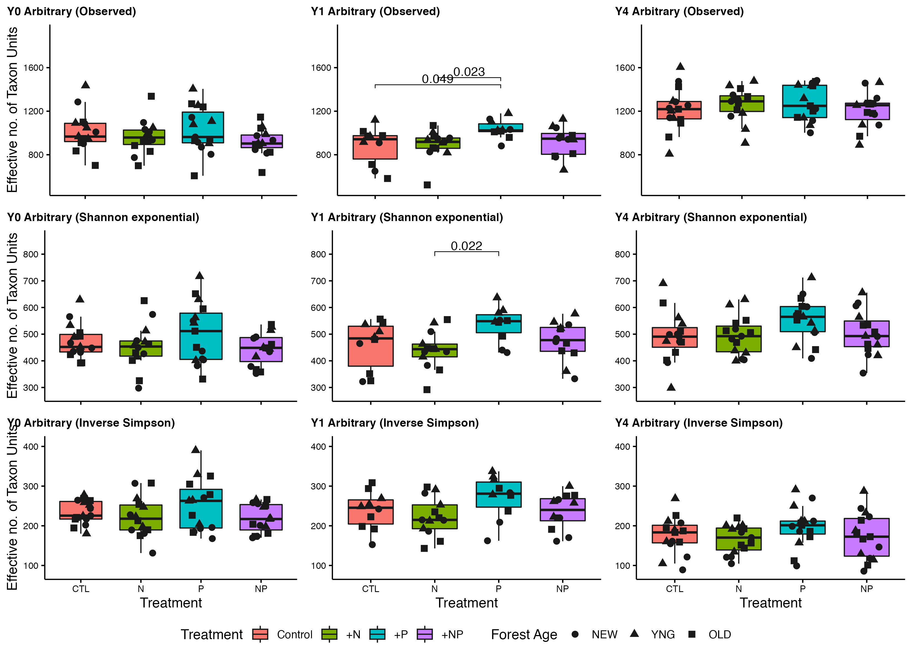
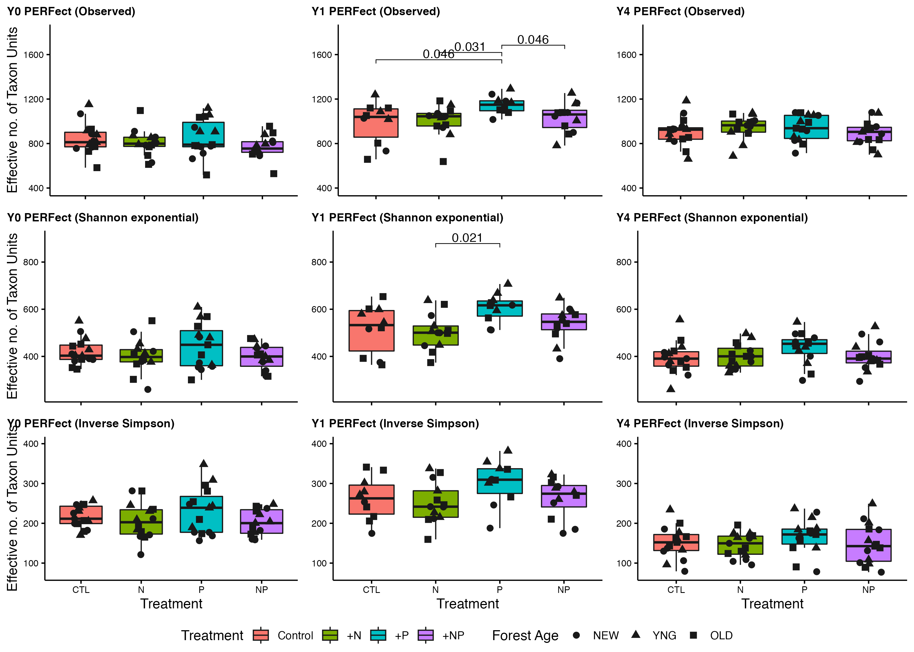

Click here for setup information.
knitr::opts_chunk$set(echo = TRUE, eval = FALSE)
set.seed(119)
#library(conflicted)
library(phyloseq); packageVersion("phyloseq")
library(Biostrings); packageVersion("Biostrings")
pacman::p_load(tidyverse, DT, ampvis2, hilldiv,
microbiome, phytools, phangorn,
pairwiseAdonis, codefolder, naniar,
labdsv, patchwork, agricolae, ggpubr,
reactable, downloadthis, captioner,
install = FALSE, update = FALSE)
source("hack_code/div_test_plot_jjs.R")
source("hack_code/div_test_jjs.R")
options(scipen=999)
knitr::opts_current$get(c(
"cache",
"cache.path",
"cache.rebuild",
"dependson",
"autodep"
))## Load to build page only #2
remove(list = ls())
load("page_build/alpha_wf_ssu.rdata")### COmmon formatting scripts
### NOTE: captioner.R must be read BEFORE captions_XYZ.R
source("assets/captioner/captioner.R")
source("assets/captioner/captions/captions_alpha.R")
source("assets/reactable/download_this_fun.R")
source("assets/reactable/styles.R")
source("assets/reactable/table_functions/alpha.R")Synopsis
This workflow contains diversity assessments for the 2018 high temperature data sets. In order to run the workflow, you either need to first run the DADA2 Workflow for 2018 High Temp samples and the Data Preparation workflow or begin with the output files from the Data Preparation workflow. See the Data Availability page for complete details.
16S rRNA
To account for presence of rare sequence variants caused by sequencing errors or other technical artifacts, we use Hill numbers (Alberdi and Gilbert 2019a). Hill numbers allow the weight put on rare versus abundant sequence variants to be scaled while providing intuitive comparisons of diversity levels using effective number of ASVs as a measuring unit. This approach allows for balancing the over representation of rare ASVs that might be inflated due to sequencing errors.
We will then use Shapiro-Wilk tests to test for normalcy and then, depending on the results, either use parametric ANOVA or non-parametric Kruskal-Wallis to compare alpha diversity among treatments.
Lets take a look at subset each data set by Year and take a look at some summary data.
(16S rRNA) Table 1 | Total samples, reads, and ASVs for each data set and their subsets (by year).
Calculate Hill Numbers
To calculate Hill numbers, we use the R package hilldiv (Alberdi and Gilbert 2019b). We calculate three metrics that put more or less weight on common species:
- Observed richness, where
q-value = 0. - Shannon exponential, which weighs ASVs by their frequency, where
q-value = 1. - Simpson multiplicative inverse, which over weighs abundant ASVs, where
q-value = 2.
We perform each analysis against the Full (unfiltered) data set as well as the Arbitrary, PERFect, and PIME, filtered data sets using the function hill_div.
The command is as follows:
hill_div(count = x, qvalue = i, tree = ultrametric_tree)where x is the sample by ASV table, i is the q-value corresponding to the metric of interest and tree is an ultrametric formatted phylogenetic tree if you choose to look at lineage, rather than ASV, diversity.
Next, transform all the data to relative abundance values, and compute new trees.
Show code
ssu_alpha_ds <- c("ssu_ps_work_Y0", "ssu_ps_work_Y1", "ssu_ps_work_Y4",
"ssu_ps_filt_Y0", "ssu_ps_filt_Y1", "ssu_ps_filt_Y4",
"ssu_ps_perfect_Y0", "ssu_ps_perfect_Y1", "ssu_ps_perfect_Y4",
"ssu_ps_pime_Y0", "ssu_ps_pime_Y1", "ssu_ps_pime_Y4")
for (i in ssu_alpha_ds) {
tmp_ps <- transform_sample_counts(get(i), function(otu) otu/sum(otu))
tmp_ps@phy_tree <- NULL
tmp_tree <- rtree(ntaxa(tmp_ps), rooted = TRUE,
tip.label = taxa_names(tmp_ps))
tmp_ps_norm <- merge_phyloseq(tmp_ps, sample_data, tmp_tree)
tmp_asv <- data.frame(t(otu_table(tmp_ps_norm)))
tmp_ps_name <- purrr::map_chr(i, ~ paste0(., "_norm"))
assign(tmp_ps_name, tmp_ps_norm)
tmp_asv_name <- purrr::map_chr(i, ~ paste0(., "_tu"))
assign(tmp_asv_name, tmp_asv)
rm(list = ls(pattern = "tmp_"))
}Now we run the analysis for all three metrics on each data sets.
Show code
qvalue <- c(0,1,2)
for (i in qvalue) {
for (j in ssu_alpha_ds) {
tmp_asv <- get(purrr::map_chr(j, ~ paste0(., "_tu")))
tmp_df <- data.frame(hill_div(tmp_asv, qvalue = i))
tmp_df <- tmp_df %>% dplyr::rename("tmp_name" = 1) %>%
tibble::rownames_to_column("SamName")
tmp_name <- purrr::map_chr(j, ~ paste0(., "_h", i))
print(tmp_name)
assign(tmp_name, tmp_df)
rm(list = ls(pattern = "tmp_"))
}
}
objects(pattern = "_h")Then we make summary tables to add back into each ps object.
Show code
for (i in ssu_alpha_ds) {
tmp_obs <- get(purrr::map_chr(i, ~ paste0(., "_h0")))
tmp_sha <- get(purrr::map_chr(i, ~ paste0(., "_h1")))
tmp_sim <- get(purrr::map_chr(i, ~ paste0(., "_h2")))
tmp_hill <- dplyr::left_join(tmp_obs, tmp_sha, by = "SamName") %>%
dplyr::left_join(., tmp_sim, by = "SamName") %>%
dplyr::rename("Observed" = 2, "Shannon_exp" = 3, "InvSimpson" = 4)
tmp_name <- purrr::map_chr(i, ~ paste0(., "_hill"))
assign(tmp_name, tmp_hill)
rm(list = ls(pattern = "tmp_"))
}And then create the new objects with the diversity data.
Show code
for (i in ssu_alpha_ds) {
tmp_ps <- get(i)
tmp_tree <- rtree(ntaxa(tmp_ps), rooted = TRUE,
tip.label = taxa_names(tmp_ps))
tmp_ps <- merge_phyloseq(tmp_ps, sample_data, tmp_tree)
tmp_hill <- get(purrr::map_chr(i, ~ paste0(., "_hill")))
tmp_hill_samp <- dplyr::left_join(data.frame(sample_data(tmp_ps)),
tmp_hill, by = "SamName")
tmp_hill_samp$ID <- tmp_hill_samp$SamName
tmp_hill_samp <- tmp_hill_samp %>% tibble::column_to_rownames("ID")
tmp_ps2 <- merge_phyloseq(otu_table(tmp_ps),
sample_data(tmp_hill_samp),
tax_table(tmp_ps),
phy_tree(tmp_ps))
assign(i, tmp_ps2)
tmp_path <- file.path("files/alpha/rdata/")
saveRDS(tmp_ps2, paste(tmp_path, i, ".rds", sep = ""))
rm(list = ls(pattern = "tmp_"))
}
objects(pattern = "_hill")Hill Numbers
Now we summarize the data for each sample against all three metrics. The table contains the results of ASV diversity estimates from the full data set and the three filtered data sets.
The suffix _fi indicates metrics for the Arbitrary data set. The suffix _pe indicates metrics for the PERFect data set and the suffix _pi indicates metrics for the PIME data set.
Normality Tests
Before running significance tests, we need to know if data is normally distributed, which will tell use whether to use a parametric or non-parametric test. To test if the data are normally distributed, we use the Shapiro-Wilk Normality test and the Bartlett Test of Homogeneity of Variances.
If the p-values are both not significant (p > 0.05) from the tests, we accept the null hypothesis (that the results are normally distributed) and test for significance between samples using an ANOVA. If the p-values are both significant (p < 0.05), we reject the null hypothesis (that the results are normally distributed) and test for significance between samples using Kruskal-Wallis (non-parametric equivalent of ANOVA).
The commands are as follows:
shapiro.test(x), where x is a numeric vector of alpha diversity values from the sample data table.
bartlett.test(Value ~ Group, data = df) Where Value is the metric of interest, Group in the treatment to compare, and df is the data frame.
First the Shapiro-Wilk Normality test.
Show code
#rm(list = ls(pattern = "shap"))
shap_test <- function(alpha_div_tab) {
shap_deparse <- deparse(substitute(alpha_div_tab))
shap_year <- gsub(".*_", "", shap_deparse)
shap_test_list <- c()
for (i in colnames(alpha_div_tab[,9:ncol(alpha_div_tab)])) {
tmp_name <- purrr::map_chr(i, ~ paste0("ssu_shap_", shap_year, "_", .))
shap_test_list <- append(shap_test_list, tmp_name)
tmp_test <- eval(shapiro.test(alpha_div_tab[[i]]))
tmp_test$data.name <- tmp_name
assign(tmp_name, tmp_test, envir = parent.frame() )
rm(list = ls(pattern = "tmp_"))
}
}shap_test(ssu_tab_alpha_div_Y0)
shap_test(ssu_tab_alpha_div_Y1)
shap_test(ssu_tab_alpha_div_Y4)
objects(pattern = "ssu_shap_")And then the Bartlett Test of Homogeneity of Variances. For the Bartlett Test, we need to define g, a vector or factor object giving the group for the corresponding elements of x.
Show code
bart_test <- function(alpha_div_tab) {
bart_g <- "YR_TREAT"
bart_deparse <- deparse(substitute(alpha_div_tab))
bart_year <- gsub(".*_", "", bart_deparse)
bart_test_list <- c()
for (i in colnames(alpha_div_tab[,9:ncol(alpha_div_tab)])) {
tmp_name <- purrr::map_chr(i, ~ paste0("ssu_bart_", bart_year, "_", .))
bart_test_list <- append(bart_test_list, tmp_name)
tmp_test <- eval(bartlett.test(alpha_div_tab[[i]] ~ get(bart_g), data = alpha_div_tab))
tmp_test$data.name <- tmp_name
assign(tmp_name, tmp_test, envir = parent.frame() )
rm(list = ls(pattern = "tmp_"))
}
}bart_test(ssu_tab_alpha_div_Y0)
bart_test(ssu_tab_alpha_div_Y1)
bart_test(ssu_tab_alpha_div_Y4)Here we see which Shapiro-Wilk Normality and Bartlett tests were significant and which were not. So wherever the value of both p-values in > 0.05 we can use an ANOVA, otherwise we use Kruskal-Wallis.
Show code
combo_tests <- function(alpha_div_tab) {
combo_deparse <- deparse(substitute(alpha_div_tab))
combo_year <- gsub(".*_", "", combo_deparse)
combo_results <- c()
for (i in colnames(alpha_div_tab[,9:ncol(alpha_div_tab)])) {
tmp_get_shap <- get(purrr::map_chr(i, ~ paste0("ssu_shap_", combo_year, "_", .)))
tmp_shap_p <- round(tmp_get_shap[[2]], 4)
tmp_get_bart <- get(purrr::map_chr(i, ~ paste0("ssu_bart_", combo_year, "_", .)))
tmp_bart_p <- round(tmp_get_bart[[3]], 4)
tmp_test <- if(tmp_shap_p > 0.05 & tmp_bart_p > 0.05 ){
tmp_test <- "ANOVA"
} else {
tmp_test <- "Kruskal-Wallis"
}
tmp_df <- data.frame(i, tmp_shap_p, tmp_bart_p, tmp_test)
combo_results <- dplyr::bind_rows(combo_results, tmp_df)
rm(list = ls(pattern = "tmp_"))
}
combo_results[,1] <- gsub('_exp', '', combo_results[,1])
combo_results <- combo_results %>% separate(col = 1,
into = c("metric", "dataset"),
sep = "_", remove = TRUE)
combo_results <- combo_results %>% tidyr::replace_na(list(dataset = "FULL"))
combo_results$dataset <- stringr::str_replace(combo_results$dataset, "^fi$", "FILT") %>%
stringr::str_replace(., "^pi$", "PIME") %>%
stringr::str_replace(., "^pe$", "PERFect")
combo_results <- combo_results %>%
dplyr::rename(c("p-value (normality)" = 3, "p-value (homogeneity)" = 4, "method" = 5))
norm_res_name <- paste0("ssu_norm_res_", combo_year)
cat("object saved as ", norm_res_name)
assign(norm_res_name, combo_results, envir = parent.frame() )
}combo_tests(ssu_tab_alpha_div_Y0)
combo_tests(ssu_tab_alpha_div_Y1)
combo_tests(ssu_tab_alpha_div_Y4)Year 0
(16S rRNA) Table 5 | Summary of Normality Tests for Year 0 unfiltered & filtered data sets. P-values in red indicate significance (p-value < 0.05).
Year 1
(16S rRNA) Table 6 | Summary of Normality Tests for Year 1 unfiltered & filtered data sets. P-values in red indicate significance (p-value < 0.05).
Year 4
(16S rRNA) Table 7 | Summary of Normality Tests for Year 4 unfiltered & filtered data sets. P-values in red indicate significance (p-value < 0.05).
Significance Tests
To begin, we need to create a hierarchy variable; a two-column matrix specifying the relationship between samples (first column) and groups (second column).
Show code
sig_group <- "YR_TREAT"
for (i in objects(pattern = "ssu_tab_alpha_div")) {
tmp_hill_hier <- get(i)
tmp_hill_hier <- tmp_hill_hier %>% dplyr::select("Sample_ID", sig_group) %>%
tibble::remove_rownames()
tmp_hill_hier <- tmp_hill_hier[order(tmp_hill_hier[[2]]), ]
#tmp_hill_hier$YR_TREAT = paste(tmp_hill_hier$YR_TREAT, 'C', sep='')
tmp_hill_hier <- tmp_hill_hier %>% tibble::remove_rownames()
tmp_yr <- gsub(".*_", "", i)
tmp_name <- paste("ssu_hill_hier", tmp_yr, sep = "_")
assign(tmp_name, tmp_hill_hier)
tmp_path <- file.path("files/alpha/rdata/")
saveRDS(tmp_hill_hier, paste(tmp_path, tmp_name, ".rds", sep = ""))
rm(list = ls(pattern = "tmp_"))
}
objects(pattern = "ssu_hill_hier")Again, we start by testing significance of ASV diversity for the data sets against each of the three metrics using the div_test function.
The command is as follows:
div_test(countable = x, qvalue = i, hierarchy = hier,
tree = ultrametric_tree, posthoc = TRUE)Where x is ASV by sample table, i is the q-value corresponding to the metric of interest, hier is the hierarchy matrix, tree is an ultrametric formatted phylogenetic tree (if you choose to explore lineage diversity), and posthoc indicates whether to run post hoc pairwise analyses.
Show code
qvalue <- c(0,1,2)
for (i in ssu_alpha_ds) {
for (j in qvalue) {
tmp_year <- gsub(".*_", "", i)
tmp_get <- get(purrr::map_chr(i, ~ paste0(., "_tu")))
tmp_heir <- get(paste("ssu_hill_hier", tmp_year, sep = "_"))
tmp_test <- div_test(tmp_get, qvalue = j,
hierarchy = tmp_heir,
posthoc = TRUE)
tmp_name <- purrr::map_chr(i, ~ paste0(., "_q", j, "_adt"))
print(tmp_name)
assign(tmp_name, tmp_test)
rm(list = ls(pattern = "tmp_"))
}
}Year 0
(16S rRNA) Table 8 | Summary of significance tests for Year 0 unfiltered & filtered data sets. P-values in red for post hoc analysis indicate significance (p-value < 0.05).
Year 1
(16S rRNA) Table 9 | Summary of significance tests for Year 1 unfiltered & filtered data sets. P-values in red for post hoc analysis indicate significance (p-value < 0.05).
Year 4
(16S rRNA) Table 10 | Summary of significance tests for Year 4 unfiltered & filtered data sets. P-values in red for post hoc analysis indicate significance (p-value < 0.05).
Results of PostHoc Analyses
Here we can inspect the results of each posthoc analysis for the unfiltered and filtered data sets.
Year 0
Click here for detailed results from the Full data set.
[[1]]
[1] "Y0 FULL (Observed)"
[[2]]
[1] "Dunn test with Benjamini-Hochberg correction"
[[3]]
Z P.unadj P.adj
Y0_CTL-Y0_N 1.6940292 0.09025974 0.5415584
Y0_CTL-Y0_NP 1.4350967 0.15125954 0.3025191
Y0_N-Y0_NP -0.2838926 0.77649270 0.9317912
Y0_CTL-Y0_P 0.1754007 0.86076478 0.8607648
Y0_N-Y0_P -1.5216792 0.12808949 0.3842685
Y0_NP-Y0_P -1.2596960 0.20777905 0.3116686[[1]]
[1] "Y0 FULL (Shannon exponential)"
[[2]]
[1] "Dunn test with Benjamini-Hochberg correction"
[[3]]
Z P.unadj P.adj
Y0_CTL-Y0_N 1.3817241 0.16705644 0.5011693
Y0_CTL-Y0_NP 0.7653514 0.44406235 0.6660935
Y0_N-Y0_NP -0.6296842 0.52890123 0.6346815
Y0_CTL-Y0_P -0.4889745 0.62485976 0.6248598
Y0_N-Y0_P -1.8621940 0.06257575 0.3754545
Y0_NP-Y0_P -1.2543258 0.20972359 0.4194472[[1]]
[1] "Y0 FULL (Inverse Simpson)"
[[2]]
[1] "Dunn test with Benjamini-Hochberg correction"
[[3]]
Z P.unadj P.adj
Y0_CTL-Y0_N 1.3033866 0.19244281 0.3848856
Y0_CTL-Y0_NP 0.8397605 0.40104267 0.6015640
Y0_N-Y0_NP -0.4782317 0.63248529 0.6324853
Y0_CTL-Y0_P -0.4889745 0.62485976 0.7498317
Y0_N-Y0_P -1.7838565 0.07444698 0.4466819
Y0_NP-Y0_P -1.3287350 0.18393541 0.5518062Click here for detailed results from the Arbitrary filtered data set.
[[1]]
[1] "Y0 Arbitrary (Observed)"
[[2]]
[1] "Tukey post-hoc test"
[[3]]
diff lwr upr p.adj
Y0_N-Y0_CTL -51.27143 -217.48265 114.93980 0.8460638
Y0_NP-Y0_CTL -97.66667 -260.98704 65.65371 0.3958506
Y0_P-Y0_CTL 15.46667 -147.85371 178.78704 0.9943912
Y0_NP-Y0_N -46.39524 -212.60646 119.81599 0.8806939
Y0_P-Y0_N 66.73810 -99.47313 232.94932 0.7127734
Y0_P-Y0_NP 113.13333 -50.18704 276.45371 0.2681599[[1]]
[1] "Y0 Arbitrary (Shannon exponential)"
[[2]]
[1] "Tukey post-hoc test"
[[3]]
diff lwr upr p.adj
Y0_N-Y0_CTL -21.674627 -104.05172 60.70247 0.8977669
Y0_NP-Y0_CTL -29.270805 -110.21515 51.67354 0.7736052
Y0_P-Y0_CTL 31.317407 -49.62693 112.26175 0.7355743
Y0_NP-Y0_N -7.596178 -89.97327 74.78092 0.9948153
Y0_P-Y0_N 52.992034 -29.38506 135.36913 0.3313146
Y0_P-Y0_NP 60.588212 -20.35613 141.53255 0.2068277[[1]]
[1] "Y0 Arbitrary (Inverse Simpson)"
[[2]]
[1] "Dunn test with Benjamini-Hochberg correction"
[[3]]
Z P.unadj P.adj
Y0_CTL-Y0_N 0.8684270 0.3851606 0.5777409
Y0_CTL-Y0_NP 1.1055075 0.2689397 0.5378795
Y0_N-Y0_NP 0.2178528 0.8275438 0.8275438
Y0_CTL-Y0_P -0.4251952 0.6706944 0.8048333
Y0_N-Y0_P -1.2862270 0.1983639 0.5950916
Y0_NP-Y0_P -1.5307027 0.1258429 0.7550573Click here for detailed results from the PERFect filtered data set.
[[1]]
[1] "Y0 PERFect (Observed)"
[[2]]
[1] "Tukey post-hoc test"
[[3]]
diff lwr upr p.adj
Y0_N-Y0_CTL -36.64286 -169.03512 95.74941 0.8832924
Y0_NP-Y0_CTL -73.86667 -203.95628 56.22295 0.4419061
Y0_P-Y0_CTL 10.33333 -119.75628 140.42295 0.9966659
Y0_NP-Y0_N -37.22381 -169.61608 95.16846 0.8784366
Y0_P-Y0_N 46.97619 -85.41608 179.36846 0.7834723
Y0_P-Y0_NP 84.20000 -45.88962 214.28962 0.3259611[[1]]
[1] "Y0 PERFect (Shannon exponential)"
[[2]]
[1] "Tukey post-hoc test"
[[3]]
diff lwr upr p.adj
Y0_N-Y0_CTL -18.175397 -88.72868 52.37789 0.9033179
Y0_NP-Y0_CTL -25.400752 -94.72693 43.92542 0.7665687
Y0_P-Y0_CTL 23.932610 -45.39357 93.25879 0.7971529
Y0_NP-Y0_N -7.225355 -77.77864 63.32793 0.9929367
Y0_P-Y0_N 42.108008 -28.44528 112.66129 0.3976104
Y0_P-Y0_NP 49.333362 -19.99281 118.65954 0.2461779[[1]]
[1] "Y0 PERFect (Inverse Simpson)"
[[2]]
[1] "Dunn test with Benjamini-Hochberg correction"
[[3]]
Z P.unadj P.adj
Y0_CTL-Y0_N 0.9407959 0.3468094 0.5202142
Y0_CTL-Y0_NP 1.2224362 0.2215427 0.6646281
Y0_N-Y0_NP 0.2603789 0.7945715 0.7945715
Y0_CTL-Y0_P -0.2763769 0.7822586 0.9387103
Y0_N-Y0_P -1.2123659 0.2253723 0.4507447
Y0_NP-Y0_P -1.4988131 0.1339221 0.8035328Click here for detailed results from the PIME filtered data set.
[[1]]
[1] "Y0 PIME (Observed)"
[[2]]
[1] "Dunn test with Benjamini-Hochberg correction"
[[3]]
Z P.unadj P.adj
Y0_CTL-Y0_N 3.355641 0.000791811670772 0.002375435012317
Y0_CTL-Y0_NP 6.071347 0.000000001268416 0.000000007610494
Y0_N-Y0_NP 2.610109 0.009051333749055 0.010861600498866
Y0_CTL-Y0_P 2.807068 0.004999472852448 0.007499209278672
Y0_N-Y0_P -0.597396 0.550243049476262 0.550243049476262
Y0_NP-Y0_P -3.264280 0.001097428385473 0.002194856770946[[1]]
[1] "Y0 PIME (Shannon exponential)"
[[2]]
[1] "Tukey post-hoc test"
[[3]]
diff lwr upr p.adj
Y0_N-Y0_CTL -9.631093 -24.528014 5.265828 0.3269449056
Y0_NP-Y0_CTL -25.770451 -40.408276 -11.132626 0.0001164782
Y0_P-Y0_CTL -7.228444 -21.866269 7.409381 0.5616768570
Y0_NP-Y0_N -16.139358 -31.036279 -1.242436 0.0288197048
Y0_P-Y0_N 2.402649 -12.494272 17.299571 0.9735583076
Y0_P-Y0_NP 18.542007 3.904182 33.179832 0.0076340436[[1]]
[1] "Y0 PIME (Inverse Simpson)"
[[2]]
[1] "Tukey post-hoc test"
[[3]]
diff lwr upr p.adj
Y0_N-Y0_CTL -5.524240 -18.6295268 7.581047 0.68083922
Y0_NP-Y0_CTL -15.747179 -28.6245304 -2.869827 0.01063331
Y0_P-Y0_CTL -3.586009 -16.4633607 9.291342 0.88142381
Y0_NP-Y0_N -10.222939 -23.3282261 2.882348 0.17690847
Y0_P-Y0_N 1.938231 -11.1670563 15.043518 0.97937995
Y0_P-Y0_NP 12.161170 -0.7161818 25.038521 0.07071505Year 1
Click here for detailed results from the Full data set.
[[1]]
[1] "Y1 FULL (Observed)"
[[2]]
[1] "Dunn test with Benjamini-Hochberg correction"
[[3]]
Z P.unadj P.adj
Y1_CTL-Y1_N 0.05430433 0.95669270 0.9566927
Y1_CTL-Y1_NP -0.34675230 0.72877742 0.8745329
Y1_N-Y1_NP -0.42793742 0.66869668 1.0000000
Y1_CTL-Y1_P -1.73656332 0.08246428 0.2473928
Y1_N-Y1_P -1.90065156 0.05734767 0.3440860
Y1_NP-Y1_P -1.46702894 0.14236818 0.2847364[[1]]
[1] "Y1 FULL (Shannon exponential)"
[[2]]
[1] "Tukey post-hoc test"
[[3]]
diff lwr upr p.adj
Y1_N-Y1_CTL 15.57911 -152.39865 183.5569 0.9945361
Y1_NP-Y1_CTL 65.10153 -105.89222 236.0953 0.7390898
Y1_P-Y1_CTL 123.14608 -55.45108 301.7432 0.2670145
Y1_NP-Y1_N 49.52243 -110.34767 209.3925 0.8401800
Y1_P-Y1_N 107.56697 -60.41079 275.5447 0.3293564
Y1_P-Y1_NP 58.04454 -112.94922 229.0383 0.8001816[[1]]
[1] "Y1 FULL (Inverse Simpson)"
[[2]]
[1] "Tukey post-hoc test"
[[3]]
diff lwr upr p.adj
Y1_N-Y1_CTL -0.09528976 -85.79497 85.60439 1.0000000
Y1_NP-Y1_CTL 11.58151846 -75.65688 98.81992 0.9843826
Y1_P-Y1_CTL 49.39771179 -41.71983 140.51525 0.4754069
Y1_NP-Y1_N 11.67680822 -69.88647 93.24009 0.9805742
Y1_P-Y1_N 49.49300155 -36.20668 135.19269 0.4199904
Y1_P-Y1_NP 37.81619333 -49.42221 125.05459 0.6545909Click here for detailed results from the Arbitrary filtered data set.
[[1]]
[1] "Y1 Arbitrary (Observed)"
[[2]]
[1] "Dunn test with Benjamini-Hochberg correction"
[[3]]
Z P.unadj P.adj
Y1_CTL-Y1_N 0.3439501 0.730883825 0.87706059
Y1_CTL-Y1_NP -0.3438112 0.730988239 0.73098824
Y1_N-Y1_NP -0.7291266 0.465924225 0.69888634
Y1_CTL-Y1_P -2.4007016 0.016363676 0.04909103
Y1_N-Y1_P -2.8964218 0.003774447 0.02264668
Y1_NP-Y1_P -2.1636398 0.030492007 0.06098401[[1]]
[1] "Y1 Arbitrary (Shannon exponential)"
[[2]]
[1] "Tukey post-hoc test"
[[3]]
diff lwr upr p.adj
Y1_N-Y1_CTL -17.20628 -102.11068 67.69811 0.94800125
Y1_NP-Y1_CTL 15.55501 -70.87382 101.98384 0.96268153
Y1_P-Y1_CTL 78.46219 -11.80977 168.73416 0.10838711
Y1_NP-Y1_N 32.76129 -48.04508 113.56766 0.70018836
Y1_P-Y1_N 95.66848 10.76409 180.57287 0.02183017
Y1_P-Y1_NP 62.90719 -23.52164 149.33602 0.22411891[[1]]
[1] "Y1 Arbitrary (Inverse Simpson)"
[[2]]
[1] "Tukey post-hoc test"
[[3]]
diff lwr upr p.adj
Y1_N-Y1_CTL -14.893278 -69.639337 39.85278 0.88513882
Y1_NP-Y1_CTL -3.058911 -58.787922 52.67010 0.99884905
Y1_P-Y1_CTL 33.555246 -24.651807 91.76230 0.42157378
Y1_NP-Y1_N 11.834367 -40.269304 63.93804 0.92890508
Y1_P-Y1_N 48.448524 -6.297535 103.19458 0.09920277
Y1_P-Y1_NP 36.614157 -19.114854 92.34317 0.30735483Click here for detailed results from the PERFect filtered data set.
[[1]]
[1] "Y1 PERFect (Observed)"
[[2]]
[1] "Dunn test with Benjamini-Hochberg correction"
[[3]]
Z P.unadj P.adj
Y1_CTL-Y1_N 0.2214383 0.824751139 0.82475114
Y1_CTL-Y1_NP -0.2578924 0.796489933 0.95578792
Y1_N-Y1_NP -0.5085048 0.611099381 0.91664907
Y1_CTL-Y1_P -2.4265607 0.015242700 0.04572810
Y1_N-Y1_P -2.8014040 0.005088078 0.03052847
Y1_NP-Y1_P -2.2765676 0.022812060 0.04562412[[1]]
[1] "Y1 PERFect (Shannon exponential)"
[[2]]
[1] "Tukey post-hoc test"
[[3]]
diff lwr upr p.adj
Y1_N-Y1_CTL -9.984672 -99.078361 79.10902 0.99046834
Y1_NP-Y1_CTL 23.002346 -67.690998 113.69569 0.90442530
Y1_P-Y1_CTL 90.963167 -3.762942 185.68928 0.06383663
Y1_NP-Y1_N 32.987018 -51.806451 117.78049 0.72617701
Y1_P-Y1_N 100.947839 11.854150 190.04153 0.02091544
Y1_P-Y1_NP 67.960821 -22.732524 158.65417 0.20228908[[1]]
[1] "Y1 PERFect (Inverse Simpson)"
[[2]]
[1] "Tukey post-hoc test"
[[3]]
diff lwr upr p.adj
Y1_N-Y1_CTL -10.1411471 -69.62778 49.34549 0.9679842
Y1_NP-Y1_CTL 0.7792664 -59.77544 61.33397 0.9999850
Y1_P-Y1_CTL 41.0224288 -22.22490 104.26975 0.3183501
Y1_NP-Y1_N 10.9204134 -45.69502 67.53585 0.9546758
Y1_P-Y1_N 51.1635759 -8.32306 110.65021 0.1139816
Y1_P-Y1_NP 40.2431624 -20.31154 100.79787 0.2976430Click here for detailed results from the PIME filtered data set.
[[1]]
[1] "Y1 PIME (Observed)"
[[2]]
[1] "Dunn test with Benjamini-Hochberg correction"
[[3]]
Z P.unadj P.adj
Y1_CTL-Y1_N -2.243556 0.02486097686136 0.02983317223363
Y1_CTL-Y1_NP -3.162783 0.00156268602409 0.00312537204818
Y1_N-Y1_NP -1.025512 0.30512174207633 0.30512174207633
Y1_CTL-Y1_P -5.653274 0.00000001574196 0.00000009445177
Y1_N-Y1_P -3.767113 0.00016514618334 0.00049543855002
Y1_NP-Y1_P -2.741869 0.00610906418492 0.00916359627738[[1]]
[1] "Y1 PIME (Shannon exponential)"
[[2]]
[1] "Tukey post-hoc test"
[[3]]
diff lwr upr p.adj
Y1_N-Y1_CTL 10.49290 -7.448961 28.43476 0.40889063700665
Y1_NP-Y1_CTL 21.27416 3.010162 39.53816 0.01679995830250
Y1_P-Y1_CTL 54.38408 35.307957 73.46021 0.00000001265047
Y1_NP-Y1_N 10.78126 -6.294608 27.85714 0.34161188626875
Y1_P-Y1_N 43.89119 25.949327 61.83304 0.00000042068943
Y1_P-Y1_NP 33.10992 14.845921 51.37392 0.00010250256689[[1]]
[1] "Y1 PIME (Inverse Simpson)"
[[2]]
[1] "Tukey post-hoc test"
[[3]]
diff lwr upr p.adj
Y1_N-Y1_CTL 2.036118 -14.063831 18.13607 0.9864360182
Y1_NP-Y1_CTL 9.463132 -6.925887 25.85215 0.4201582218
Y1_P-Y1_CTL 29.812569 12.694797 46.93034 0.0001870151
Y1_NP-Y1_N 7.427014 -7.895850 22.74988 0.5695343640
Y1_P-Y1_N 27.776452 11.676503 43.87640 0.0002145172
Y1_P-Y1_NP 20.349437 3.960418 36.73846 0.0097335126Year 4
Click here for detailed results from the Full data set.
[[1]]
[1] "Y4 FULL (Observed)"
[[2]]
[1] "Tukey post-hoc test"
[[3]]
diff lwr upr p.adj
Y4_N-Y4_CTL -49.6000 -438.5051 339.3051 0.9865967
Y4_NP-Y4_CTL -36.8000 -425.7051 352.1051 0.9944150
Y4_P-Y4_CTL 120.0667 -268.8384 508.9718 0.8459591
Y4_NP-Y4_N 12.8000 -376.1051 401.7051 0.9997598
Y4_P-Y4_N 169.6667 -219.2384 558.5718 0.6572326
Y4_P-Y4_NP 156.8667 -232.0384 545.7718 0.7102185[[1]]
[1] "Y4 FULL (Shannon exponential)"
[[2]]
[1] "Dunn test with Benjamini-Hochberg correction"
[[3]]
Z P.unadj P.adj
Y4_CTL-Y4_N 0.5749792 0.56530536 0.67836643
Y4_CTL-Y4_NP -0.4913459 0.62318184 0.62318184
Y4_N-Y4_NP -1.0663251 0.28627672 0.42941507
Y4_CTL-Y4_P -1.9444751 0.05183818 0.15551454
Y4_N-Y4_P -2.5194544 0.01175369 0.07052213
Y4_NP-Y4_P -1.4531293 0.14618786 0.29237573[[1]]
[1] "Y4 FULL (Inverse Simpson)"
[[2]]
[1] "Tukey post-hoc test"
[[3]]
diff lwr upr p.adj
Y4_N-Y4_CTL -21.252929 -87.79109 45.28523 0.8323421
Y4_NP-Y4_CTL 1.896656 -64.64150 68.43481 0.9998439
Y4_P-Y4_CTL 34.150566 -32.38759 100.68872 0.5299803
Y4_NP-Y4_N 23.149584 -43.38857 89.68774 0.7936175
Y4_P-Y4_N 55.403494 -11.13466 121.94165 0.1344643
Y4_P-Y4_NP 32.253910 -34.28425 98.79207 0.5771098Click here for detailed results from the Arbitrary filtered data set.
[[1]]
[1] "Y4 Arbitrary (Observed)"
[[2]]
[1] "Tukey post-hoc test"
[[3]]
diff lwr upr p.adj
Y4_N-Y4_CTL 47.86667 -115.18698 210.9203 0.8643857
Y4_NP-Y4_CTL -8.20000 -171.25365 154.8536 0.9991466
Y4_P-Y4_CTL 62.40000 -100.65365 225.4536 0.7423389
Y4_NP-Y4_N -56.06667 -219.12032 106.9870 0.7993315
Y4_P-Y4_N 14.53333 -148.52032 177.5870 0.9953191
Y4_P-Y4_NP 70.60000 -92.45365 233.6536 0.6625909[[1]]
[1] "Y4 Arbitrary (Shannon exponential)"
[[2]]
[1] "Tukey post-hoc test"
[[3]]
diff lwr upr p.adj
Y4_N-Y4_CTL 2.945242 -77.15546 83.04594 0.9996654
Y4_NP-Y4_CTL 14.671112 -65.42959 94.77181 0.9621251
Y4_P-Y4_CTL 65.663604 -14.43710 145.76430 0.1440909
Y4_NP-Y4_N 11.725870 -68.37483 91.82657 0.9800155
Y4_P-Y4_N 62.718362 -17.38234 142.81906 0.1744588
Y4_P-Y4_NP 50.992492 -29.10821 131.09319 0.3407741[[1]]
[1] "Y4 Arbitrary (Inverse Simpson)"
[[2]]
[1] "Tukey post-hoc test"
[[3]]
diff lwr upr p.adj
Y4_N-Y4_CTL -8.723838 -55.92098 38.47331 0.9611384
Y4_NP-Y4_CTL -0.986836 -48.18398 46.21031 0.9999383
Y4_P-Y4_CTL 23.106367 -24.09078 70.30351 0.5690999
Y4_NP-Y4_N 7.737002 -39.46014 54.93415 0.9723497
Y4_P-Y4_N 31.830205 -15.36694 79.02735 0.2908790
Y4_P-Y4_NP 24.093203 -23.10394 71.29035 0.5345333Click here for detailed results from the PERFect filtered data set.
[[1]]
[1] "Y4 PERFect (Observed)"
[[2]]
[1] "Tukey post-hoc test"
[[3]]
diff lwr upr p.adj
Y4_N-Y4_CTL 43.533333 -67.36267 154.42934 0.7271345
Y4_NP-Y4_CTL -9.466667 -120.36267 101.42934 0.9958804
Y4_P-Y4_CTL 37.666667 -73.22934 148.56267 0.8051710
Y4_NP-Y4_N -53.000000 -163.89601 57.89601 0.5884265
Y4_P-Y4_N -5.866667 -116.76267 105.02934 0.9990073
Y4_P-Y4_NP 47.133333 -63.76267 158.02934 0.6755350[[1]]
[1] "Y4 PERFect (Shannon exponential)"
[[2]]
[1] "Tukey post-hoc test"
[[3]]
diff lwr upr p.adj
Y4_N-Y4_CTL 7.24852260 -52.35157 66.84862 0.9883303
Y4_NP-Y4_CTL 7.14925964 -52.45084 66.74936 0.9887909
Y4_P-Y4_CTL 43.74100628 -15.85909 103.34110 0.2220540
Y4_NP-Y4_N -0.09926296 -59.69936 59.50083 1.0000000
Y4_P-Y4_N 36.49248368 -23.10761 96.09258 0.3752002
Y4_P-Y4_NP 36.59174665 -23.00835 96.19184 0.3727877[[1]]
[1] "Y4 PERFect (Inverse Simpson)"
[[2]]
[1] "Tukey post-hoc test"
[[3]]
diff lwr upr p.adj
Y4_N-Y4_CTL -5.859876 -46.30399 34.58424 0.9806008
Y4_NP-Y4_CTL -2.962670 -43.40678 37.48144 0.9973831
Y4_P-Y4_CTL 16.473317 -23.97080 56.91743 0.7039538
Y4_NP-Y4_N 2.897206 -37.54691 43.34132 0.9975512
Y4_P-Y4_N 22.333193 -18.11092 62.77731 0.4668789
Y4_P-Y4_NP 19.435987 -21.00813 59.88010 0.5840460Click here for detailed results from the PIME filtered data set.
[[1]]
[1] "Y4 PIME (Observed)"
[[2]]
[1] "Dunn test with Benjamini-Hochberg correction"
[[3]]
Z P.unadj P.adj
Y4_CTL-Y4_N -4.737318 0.000002165655494 0.00000649696648
Y4_CTL-Y4_NP 1.270605 0.203869182039662 0.20386918203966
Y4_N-Y4_NP 6.007923 0.000000001879153 0.00000001127492
Y4_CTL-Y4_P -2.828796 0.004672352219745 0.00700852832962
Y4_N-Y4_P 1.908522 0.056323779886700 0.06758853586404
Y4_NP-Y4_P -4.099401 0.000041422130331 0.00008284426066[[1]]
[1] "Y4 PIME (Shannon exponential)"
[[2]]
[1] "Tukey post-hoc test"
[[3]]
diff lwr upr p.adj
Y4_N-Y4_CTL 26.949236 10.006390 43.89208 0.00052613493
Y4_NP-Y4_CTL -5.218704 -22.161549 11.72414 0.84684830344
Y4_P-Y4_CTL 22.105806 5.162961 39.04865 0.00566990755
Y4_NP-Y4_N -32.167940 -49.110785 -15.22509 0.00003164722
Y4_P-Y4_N -4.843430 -21.786275 12.09942 0.87330810466
Y4_P-Y4_NP 27.324510 10.381664 44.26736 0.00043305027[[1]]
[1] "Y4 PIME (Inverse Simpson)"
[[2]]
[1] "Tukey post-hoc test"
[[3]]
diff lwr upr p.adj
Y4_N-Y4_CTL 7.522224 -8.443850 23.488298 0.5996921
Y4_NP-Y4_CTL -5.245808 -21.211882 10.720266 0.8202755
Y4_P-Y4_CTL 8.844860 -7.121214 24.810935 0.4640512
Y4_NP-Y4_N -12.768032 -28.734106 3.198042 0.1601175
Y4_P-Y4_N 1.322636 -14.643438 17.288710 0.9962309
Y4_P-Y4_NP 14.090668 -1.875406 30.056742 0.1018938Alpha Diversity Plots
Now we can plot the results from the posthoc analyses for each metric and data set using the function div_test_plot_jjs. I modified the original function (div_test_plot) to control a little of the formatting.
The command is as follows:
div_test_plot(divtest = x, chart = "type", colour = col.pal,
posthoc = TRUE, threshold = value))Where x is the results from the div_test function, "type" is chart type (box, jitter, or violin), colour is is a color palette, posthoc indicates whether to run posthoc pairwise analyses, and value is the maximum p-value to show in pairwise posthoc results. WARNING if none of the posthoc results are below the specified threshold, the function will throw an error. Therefore, until this is fixed, all posthoc values are shown.
Show code
agua_col <- c("#B26322", "#29B222", "#2271B2", "#AB22B2")
source("hack_code/div_test_plot_jjs.R")
rm(list = ls(pattern="_adt_plot"))
for (i in objects(pattern="_adt")) {
tmp_name <- purrr::map_chr(i, ~ paste0(., "_plot"))
tmp_get <- get(i)
tmp_ds_year <- stringr::str_extract(i, "Y[0-9]")
tmp_order <- c(
paste(tmp_ds_year, "CTL", sep = "_"),
paste(tmp_ds_year, "N", sep = "_"),
paste(tmp_ds_year, "P", sep = "_"),
paste(tmp_ds_year, "NP", sep = "_")
)
tmp_get$data <- tmp_get$data %>%
mutate(Group = factor(Group, levels = tmp_order)) %>%
arrange(Group)
tmp_df <- div_test_plot_jjs(tmp_get, chart = "box",
posthoc = TRUE,
#threshold = 0.05,
colour = agua_col)
tmp_df <- ggpar(tmp_df, legend = "none")
#print(tmp_name)
assign(tmp_name, tmp_df)
rm(list = ls(pattern = "tmp_"))
}Posthoc adjusted p-values given for each significant pairwise comparison.
FULL data set

(16S rRNA) Figure 1 | Alpha diversity plots. Left = Observed richness; middle = Shannon exponential; right = Simpson multiplicative inverse. Top = Year 0; middle = Year 1; bottom = Year 4.
Arbitrary filtered

(16S rRNA) Figure 2 | Alpha diversity plots. Left = Observed richness; middle = Shannon exponential; right = Simpson multiplicative inverse. Top = Year 0; middle = Year 1; bottom = Year 4.
PERFect filtered

(16S rRNA) Figure 3 | Alpha diversity plots. Left = Observed richness; middle = Shannon exponential; right = Simpson multiplicative inverse. Top = Year 0; middle = Year 1; bottom = Year 4.
PIME filtered

(16S rRNA) Figure 4 | Alpha diversity plots. Left = Observed richness; middle = Shannon exponential; right = Simpson multiplicative inverse. Top = Year 0; middle = Year 1; bottom = Year 4.
Posthoc sample comparisons
FULL data set
(16S rRNA) Table 11 | Summary of posthoc comparisons for the FULL data set across three metrics. P-values in red indicate significance between year/treatment (p-value < 0.05).
Arbitrary filtered
(16S rRNA) Table 12 | Summary of posthoc comparisons for the Arbitrary filtered data set across three metrics. P-values in red indicate significance between year/treatment (p-value < 0.05).
PERFect filtered
(16S rRNA) Table 13 | Summary of posthoc comparisons for the PERFect filtered data set across three metrics. P-values in red indicate significance between year/treatment (p-value < 0.05).
PIME filtered
(16S rRNA) Table 14 | Summary of posthoc comparisons for the PIME filtered data set across three metrics. P-values in red indicate significance between year/treatment (p-value < 0.05).
[1] "agua_col"
[2] "bart_test"
[3] "border_style"
[4] "caption_fig_its"
[5] "caption_fig_ssu"
[6] "caption_tab_its"
[7] "caption_tab_ssu"
[8] "col_order"
[9] "combo_tests"
[10] "div_plot_theme"
[11] "div_test_plot_jjs"
[12] "download_this_fun"
[13] "ds_summ_table"
[14] "gen_summ"
[15] "get_pvalue"
[16] "header_style"
[17] "header_style_grp"
[18] "hill_table"
[19] "i"
[20] "j"
[21] "list"
[22] "na_border_style"
[23] "na_style"
[24] "new_labs"
[25] "norm_res_table"
[26] "per_cell"
[27] "ph_summ"
[28] "plots_to_save"
[29] "poshoc_table"
[30] "pval_cell"
[31] "pval_style"
[32] "pval_style_border"
[33] "ref"
[34] "shap_test"
[35] "sig_group"
[36] "sig_table"
[37] "ssu_alph_div_plots_filt"
[38] "ssu_alph_div_plots_perfect"
[39] "ssu_alph_div_plots_pime"
[40] "ssu_alph_div_plots_work"
[41] "ssu_alpha_ds"
[42] "ssu_alpha_hill_filt_posthoc"
[43] "ssu_alpha_hill_perfect_posthoc"
[44] "ssu_alpha_hill_pime_posthoc"
[45] "ssu_alpha_hill_work_posthoc"
[46] "ssu_bart_Y0_InvSimpson"
[47] "ssu_bart_Y0_InvSimpson_fi"
[48] "ssu_bart_Y0_InvSimpson_pe"
[49] "ssu_bart_Y0_InvSimpson_pi"
[50] "ssu_bart_Y0_Observed"
[51] "ssu_bart_Y0_Observed_fi"
[52] "ssu_bart_Y0_Observed_pe"
[53] "ssu_bart_Y0_Observed_pi"
[54] "ssu_bart_Y0_Shannon_exp"
[55] "ssu_bart_Y0_Shannon_exp_fi"
[56] "ssu_bart_Y0_Shannon_exp_pe"
[57] "ssu_bart_Y0_Shannon_exp_pi"
[58] "ssu_bart_Y1_InvSimpson"
[59] "ssu_bart_Y1_InvSimpson_fi"
[60] "ssu_bart_Y1_InvSimpson_pe"
[61] "ssu_bart_Y1_InvSimpson_pi"
[62] "ssu_bart_Y1_Observed"
[63] "ssu_bart_Y1_Observed_fi"
[64] "ssu_bart_Y1_Observed_pe"
[65] "ssu_bart_Y1_Observed_pi"
[66] "ssu_bart_Y1_Shannon_exp"
[67] "ssu_bart_Y1_Shannon_exp_fi"
[68] "ssu_bart_Y1_Shannon_exp_pe"
[69] "ssu_bart_Y1_Shannon_exp_pi"
[70] "ssu_bart_Y4_InvSimpson"
[71] "ssu_bart_Y4_InvSimpson_fi"
[72] "ssu_bart_Y4_InvSimpson_pe"
[73] "ssu_bart_Y4_InvSimpson_pi"
[74] "ssu_bart_Y4_Observed"
[75] "ssu_bart_Y4_Observed_fi"
[76] "ssu_bart_Y4_Observed_pe"
[77] "ssu_bart_Y4_Observed_pi"
[78] "ssu_bart_Y4_Shannon_exp"
[79] "ssu_bart_Y4_Shannon_exp_fi"
[80] "ssu_bart_Y4_Shannon_exp_pe"
[81] "ssu_bart_Y4_Shannon_exp_pi"
[82] "ssu_dataset_summary"
[83] "ssu_filter_summary"
[84] "ssu_hill_hier_Y0"
[85] "ssu_hill_hier_Y1"
[86] "ssu_hill_hier_Y4"
[87] "ssu_norm_res_Y0"
[88] "ssu_norm_res_Y1"
[89] "ssu_norm_res_Y4"
[90] "ssu_ps_filt"
[91] "ssu_ps_filt_Y0"
[92] "ssu_ps_filt_Y0_h0"
[93] "ssu_ps_filt_Y0_h1"
[94] "ssu_ps_filt_Y0_h2"
[95] "ssu_ps_filt_Y0_hill"
[96] "ssu_ps_filt_Y0_hill_samp"
[97] "ssu_ps_filt_Y0_hill_sum"
[98] "ssu_ps_filt_Y0_norm"
[99] "ssu_ps_filt_Y0_q0_adt"
[100] "ssu_ps_filt_Y0_q0_adt_plot"
[101] "ssu_ps_filt_Y0_q0_adt_reform"
[102] "ssu_ps_filt_Y0_q1_adt"
[103] "ssu_ps_filt_Y0_q1_adt_plot"
[104] "ssu_ps_filt_Y0_q1_adt_reform"
[105] "ssu_ps_filt_Y0_q2_adt"
[106] "ssu_ps_filt_Y0_q2_adt_plot"
[107] "ssu_ps_filt_Y0_q2_adt_reform"
[108] "ssu_ps_filt_Y0_sig_tab"
[109] "ssu_ps_filt_Y0_sig_tab_post"
[110] "ssu_ps_filt_Y0_tu"
[111] "ssu_ps_filt_Y1"
[112] "ssu_ps_filt_Y1_h0"
[113] "ssu_ps_filt_Y1_h1"
[114] "ssu_ps_filt_Y1_h2"
[115] "ssu_ps_filt_Y1_hill"
[116] "ssu_ps_filt_Y1_hill_samp"
[117] "ssu_ps_filt_Y1_hill_sum"
[118] "ssu_ps_filt_Y1_norm"
[119] "ssu_ps_filt_Y1_q0_adt"
[120] "ssu_ps_filt_Y1_q0_adt_plot"
[121] "ssu_ps_filt_Y1_q0_adt_reform"
[122] "ssu_ps_filt_Y1_q1_adt"
[123] "ssu_ps_filt_Y1_q1_adt_plot"
[124] "ssu_ps_filt_Y1_q1_adt_reform"
[125] "ssu_ps_filt_Y1_q2_adt"
[126] "ssu_ps_filt_Y1_q2_adt_plot"
[127] "ssu_ps_filt_Y1_q2_adt_reform"
[128] "ssu_ps_filt_Y1_sig_tab"
[129] "ssu_ps_filt_Y1_sig_tab_post"
[130] "ssu_ps_filt_Y1_tu"
[131] "ssu_ps_filt_Y4"
[132] "ssu_ps_filt_Y4_h0"
[133] "ssu_ps_filt_Y4_h1"
[134] "ssu_ps_filt_Y4_h2"
[135] "ssu_ps_filt_Y4_hill"
[136] "ssu_ps_filt_Y4_hill_samp"
[137] "ssu_ps_filt_Y4_hill_sum"
[138] "ssu_ps_filt_Y4_norm"
[139] "ssu_ps_filt_Y4_q0_adt"
[140] "ssu_ps_filt_Y4_q0_adt_plot"
[141] "ssu_ps_filt_Y4_q0_adt_reform"
[142] "ssu_ps_filt_Y4_q1_adt"
[143] "ssu_ps_filt_Y4_q1_adt_plot"
[144] "ssu_ps_filt_Y4_q1_adt_reform"
[145] "ssu_ps_filt_Y4_q2_adt"
[146] "ssu_ps_filt_Y4_q2_adt_plot"
[147] "ssu_ps_filt_Y4_q2_adt_reform"
[148] "ssu_ps_filt_Y4_sig_tab"
[149] "ssu_ps_filt_Y4_sig_tab_post"
[150] "ssu_ps_filt_Y4_tu"
[151] "ssu_ps_perfect"
[152] "ssu_ps_perfect_Y0"
[153] "ssu_ps_perfect_Y0_h0"
[154] "ssu_ps_perfect_Y0_h1"
[155] "ssu_ps_perfect_Y0_h2"
[156] "ssu_ps_perfect_Y0_hill"
[157] "ssu_ps_perfect_Y0_hill_samp"
[158] "ssu_ps_perfect_Y0_hill_sum"
[159] "ssu_ps_perfect_Y0_norm"
[160] "ssu_ps_perfect_Y0_q0_adt"
[161] "ssu_ps_perfect_Y0_q0_adt_plot"
[162] "ssu_ps_perfect_Y0_q0_adt_reform"
[163] "ssu_ps_perfect_Y0_q1_adt"
[164] "ssu_ps_perfect_Y0_q1_adt_plot"
[165] "ssu_ps_perfect_Y0_q1_adt_reform"
[166] "ssu_ps_perfect_Y0_q2_adt"
[167] "ssu_ps_perfect_Y0_q2_adt_plot"
[168] "ssu_ps_perfect_Y0_q2_adt_reform"
[169] "ssu_ps_perfect_Y0_sig_tab"
[170] "ssu_ps_perfect_Y0_sig_tab_post"
[171] "ssu_ps_perfect_Y0_tu"
[172] "ssu_ps_perfect_Y1"
[173] "ssu_ps_perfect_Y1_h0"
[174] "ssu_ps_perfect_Y1_h1"
[175] "ssu_ps_perfect_Y1_h2"
[176] "ssu_ps_perfect_Y1_hill"
[177] "ssu_ps_perfect_Y1_hill_samp"
[178] "ssu_ps_perfect_Y1_hill_sum"
[179] "ssu_ps_perfect_Y1_norm"
[180] "ssu_ps_perfect_Y1_q0_adt"
[181] "ssu_ps_perfect_Y1_q0_adt_plot"
[182] "ssu_ps_perfect_Y1_q0_adt_reform"
[183] "ssu_ps_perfect_Y1_q1_adt"
[184] "ssu_ps_perfect_Y1_q1_adt_plot"
[185] "ssu_ps_perfect_Y1_q1_adt_reform"
[186] "ssu_ps_perfect_Y1_q2_adt"
[187] "ssu_ps_perfect_Y1_q2_adt_plot"
[188] "ssu_ps_perfect_Y1_q2_adt_reform"
[189] "ssu_ps_perfect_Y1_sig_tab"
[190] "ssu_ps_perfect_Y1_sig_tab_post"
[191] "ssu_ps_perfect_Y1_tu"
[192] "ssu_ps_perfect_Y4"
[193] "ssu_ps_perfect_Y4_h0"
[194] "ssu_ps_perfect_Y4_h1"
[195] "ssu_ps_perfect_Y4_h2"
[196] "ssu_ps_perfect_Y4_hill"
[197] "ssu_ps_perfect_Y4_hill_samp"
[198] "ssu_ps_perfect_Y4_hill_sum"
[199] "ssu_ps_perfect_Y4_norm"
[200] "ssu_ps_perfect_Y4_q0_adt"
[201] "ssu_ps_perfect_Y4_q0_adt_plot"
[202] "ssu_ps_perfect_Y4_q0_adt_reform"
[203] "ssu_ps_perfect_Y4_q1_adt"
[204] "ssu_ps_perfect_Y4_q1_adt_plot"
[205] "ssu_ps_perfect_Y4_q1_adt_reform"
[206] "ssu_ps_perfect_Y4_q2_adt"
[207] "ssu_ps_perfect_Y4_q2_adt_plot"
[208] "ssu_ps_perfect_Y4_q2_adt_reform"
[209] "ssu_ps_perfect_Y4_sig_tab"
[210] "ssu_ps_perfect_Y4_sig_tab_post"
[211] "ssu_ps_perfect_Y4_tu"
[212] "ssu_ps_pime"
[213] "ssu_ps_pime_Y0"
[214] "ssu_ps_pime_Y0_h0"
[215] "ssu_ps_pime_Y0_h1"
[216] "ssu_ps_pime_Y0_h2"
[217] "ssu_ps_pime_Y0_hill"
[218] "ssu_ps_pime_Y0_hill_samp"
[219] "ssu_ps_pime_Y0_hill_sum"
[220] "ssu_ps_pime_Y0_norm"
[221] "ssu_ps_pime_Y0_q0_adt"
[222] "ssu_ps_pime_Y0_q0_adt_plot"
[223] "ssu_ps_pime_Y0_q0_adt_reform"
[224] "ssu_ps_pime_Y0_q1_adt"
[225] "ssu_ps_pime_Y0_q1_adt_plot"
[226] "ssu_ps_pime_Y0_q1_adt_reform"
[227] "ssu_ps_pime_Y0_q2_adt"
[228] "ssu_ps_pime_Y0_q2_adt_plot"
[229] "ssu_ps_pime_Y0_q2_adt_reform"
[230] "ssu_ps_pime_Y0_sig_tab"
[231] "ssu_ps_pime_Y0_sig_tab_post"
[232] "ssu_ps_pime_Y0_tu"
[233] "ssu_ps_pime_Y1"
[234] "ssu_ps_pime_Y1_h0"
[235] "ssu_ps_pime_Y1_h1"
[236] "ssu_ps_pime_Y1_h2"
[237] "ssu_ps_pime_Y1_hill"
[238] "ssu_ps_pime_Y1_hill_samp"
[239] "ssu_ps_pime_Y1_hill_sum"
[240] "ssu_ps_pime_Y1_norm"
[241] "ssu_ps_pime_Y1_q0_adt"
[242] "ssu_ps_pime_Y1_q0_adt_plot"
[243] "ssu_ps_pime_Y1_q0_adt_reform"
[244] "ssu_ps_pime_Y1_q1_adt"
[245] "ssu_ps_pime_Y1_q1_adt_plot"
[246] "ssu_ps_pime_Y1_q1_adt_reform"
[247] "ssu_ps_pime_Y1_q2_adt"
[248] "ssu_ps_pime_Y1_q2_adt_plot"
[249] "ssu_ps_pime_Y1_q2_adt_reform"
[250] "ssu_ps_pime_Y1_sig_tab"
[251] "ssu_ps_pime_Y1_sig_tab_post"
[252] "ssu_ps_pime_Y1_tu"
[253] "ssu_ps_pime_Y4"
[254] "ssu_ps_pime_Y4_h0"
[255] "ssu_ps_pime_Y4_h1"
[256] "ssu_ps_pime_Y4_h2"
[257] "ssu_ps_pime_Y4_hill"
[258] "ssu_ps_pime_Y4_hill_samp"
[259] "ssu_ps_pime_Y4_hill_sum"
[260] "ssu_ps_pime_Y4_norm"
[261] "ssu_ps_pime_Y4_q0_adt"
[262] "ssu_ps_pime_Y4_q0_adt_plot"
[263] "ssu_ps_pime_Y4_q0_adt_reform"
[264] "ssu_ps_pime_Y4_q1_adt"
[265] "ssu_ps_pime_Y4_q1_adt_plot"
[266] "ssu_ps_pime_Y4_q1_adt_reform"
[267] "ssu_ps_pime_Y4_q2_adt"
[268] "ssu_ps_pime_Y4_q2_adt_plot"
[269] "ssu_ps_pime_Y4_q2_adt_reform"
[270] "ssu_ps_pime_Y4_sig_tab"
[271] "ssu_ps_pime_Y4_sig_tab_post"
[272] "ssu_ps_pime_Y4_tu"
[273] "ssu_ps_work"
[274] "ssu_ps_work_Y0"
[275] "ssu_ps_work_Y0_h0"
[276] "ssu_ps_work_Y0_h1"
[277] "ssu_ps_work_Y0_h2"
[278] "ssu_ps_work_Y0_hill"
[279] "ssu_ps_work_Y0_hill_samp"
[280] "ssu_ps_work_Y0_hill_sum"
[281] "ssu_ps_work_Y0_norm"
[282] "ssu_ps_work_Y0_q0_adt"
[283] "ssu_ps_work_Y0_q0_adt_plot"
[284] "ssu_ps_work_Y0_q0_adt_reform"
[285] "ssu_ps_work_Y0_q1_adt"
[286] "ssu_ps_work_Y0_q1_adt_plot"
[287] "ssu_ps_work_Y0_q1_adt_reform"
[288] "ssu_ps_work_Y0_q2_adt"
[289] "ssu_ps_work_Y0_q2_adt_plot"
[290] "ssu_ps_work_Y0_q2_adt_reform"
[291] "ssu_ps_work_Y0_sig_tab"
[292] "ssu_ps_work_Y0_sig_tab_post"
[293] "ssu_ps_work_Y0_tu"
[294] "ssu_ps_work_Y1"
[295] "ssu_ps_work_Y1_h0"
[296] "ssu_ps_work_Y1_h1"
[297] "ssu_ps_work_Y1_h2"
[298] "ssu_ps_work_Y1_hill"
[299] "ssu_ps_work_Y1_hill_samp"
[300] "ssu_ps_work_Y1_hill_sum"
[301] "ssu_ps_work_Y1_norm"
[302] "ssu_ps_work_Y1_q0_adt"
[303] "ssu_ps_work_Y1_q0_adt_plot"
[304] "ssu_ps_work_Y1_q0_adt_reform"
[305] "ssu_ps_work_Y1_q1_adt"
[306] "ssu_ps_work_Y1_q1_adt_plot"
[307] "ssu_ps_work_Y1_q1_adt_reform"
[308] "ssu_ps_work_Y1_q2_adt"
[309] "ssu_ps_work_Y1_q2_adt_plot"
[310] "ssu_ps_work_Y1_q2_adt_reform"
[311] "ssu_ps_work_Y1_sig_tab"
[312] "ssu_ps_work_Y1_sig_tab_post"
[313] "ssu_ps_work_Y1_tu"
[314] "ssu_ps_work_Y4"
[315] "ssu_ps_work_Y4_h0"
[316] "ssu_ps_work_Y4_h1"
[317] "ssu_ps_work_Y4_h2"
[318] "ssu_ps_work_Y4_hill"
[319] "ssu_ps_work_Y4_hill_samp"
[320] "ssu_ps_work_Y4_hill_sum"
[321] "ssu_ps_work_Y4_norm"
[322] "ssu_ps_work_Y4_q0_adt"
[323] "ssu_ps_work_Y4_q0_adt_plot"
[324] "ssu_ps_work_Y4_q0_adt_reform"
[325] "ssu_ps_work_Y4_q1_adt"
[326] "ssu_ps_work_Y4_q1_adt_plot"
[327] "ssu_ps_work_Y4_q1_adt_reform"
[328] "ssu_ps_work_Y4_q2_adt"
[329] "ssu_ps_work_Y4_q2_adt_plot"
[330] "ssu_ps_work_Y4_q2_adt_reform"
[331] "ssu_ps_work_Y4_sig_tab"
[332] "ssu_ps_work_Y4_sig_tab_post"
[333] "ssu_ps_work_Y4_tu"
[334] "ssu_shap_Y0_InvSimpson"
[335] "ssu_shap_Y0_InvSimpson_fi"
[336] "ssu_shap_Y0_InvSimpson_pe"
[337] "ssu_shap_Y0_InvSimpson_pi"
[338] "ssu_shap_Y0_Observed"
[339] "ssu_shap_Y0_Observed_fi"
[340] "ssu_shap_Y0_Observed_pe"
[341] "ssu_shap_Y0_Observed_pi"
[342] "ssu_shap_Y0_Shannon_exp"
[343] "ssu_shap_Y0_Shannon_exp_fi"
[344] "ssu_shap_Y0_Shannon_exp_pe"
[345] "ssu_shap_Y0_Shannon_exp_pi"
[346] "ssu_shap_Y1_InvSimpson"
[347] "ssu_shap_Y1_InvSimpson_fi"
[348] "ssu_shap_Y1_InvSimpson_pe"
[349] "ssu_shap_Y1_InvSimpson_pi"
[350] "ssu_shap_Y1_Observed"
[351] "ssu_shap_Y1_Observed_fi"
[352] "ssu_shap_Y1_Observed_pe"
[353] "ssu_shap_Y1_Observed_pi"
[354] "ssu_shap_Y1_Shannon_exp"
[355] "ssu_shap_Y1_Shannon_exp_fi"
[356] "ssu_shap_Y1_Shannon_exp_pe"
[357] "ssu_shap_Y1_Shannon_exp_pi"
[358] "ssu_shap_Y4_InvSimpson"
[359] "ssu_shap_Y4_InvSimpson_fi"
[360] "ssu_shap_Y4_InvSimpson_pe"
[361] "ssu_shap_Y4_InvSimpson_pi"
[362] "ssu_shap_Y4_Observed"
[363] "ssu_shap_Y4_Observed_fi"
[364] "ssu_shap_Y4_Observed_pe"
[365] "ssu_shap_Y4_Observed_pi"
[366] "ssu_shap_Y4_Shannon_exp"
[367] "ssu_shap_Y4_Shannon_exp_fi"
[368] "ssu_shap_Y4_Shannon_exp_pe"
[369] "ssu_shap_Y4_Shannon_exp_pi"
[370] "ssu_sig_tab_all_Y0"
[371] "ssu_sig_tab_all_Y1"
[372] "ssu_sig_tab_all_Y4"
[373] "ssu_split_summary"
[374] "ssu_tab_alpha_div_Y0"
[375] "ssu_tab_alpha_div_Y1"
[376] "ssu_tab_alpha_div_Y4"
[377] "ssu_Y0_f0_lab"
[378] "ssu_Y0_f1_lab"
[379] "ssu_Y0_f2_lab"
[380] "ssu_Y0_l0_lab"
[381] "ssu_Y0_l1_lab"
[382] "ssu_Y0_l2_lab"
[383] "ssu_Y0_p0_lab"
[384] "ssu_Y0_p1_lab"
[385] "ssu_Y0_p2_lab"
[386] "ssu_Y0_r0_lab"
[387] "ssu_Y0_r1_lab"
[388] "ssu_Y0_r2_lab"
[389] "ssu_Y1_f0_lab"
[390] "ssu_Y1_f1_lab"
[391] "ssu_Y1_f2_lab"
[392] "ssu_Y1_l0_lab"
[393] "ssu_Y1_l1_lab"
[394] "ssu_Y1_l2_lab"
[395] "ssu_Y1_p0_lab"
[396] "ssu_Y1_p1_lab"
[397] "ssu_Y1_p2_lab"
[398] "ssu_Y1_r0_lab"
[399] "ssu_Y1_r1_lab"
[400] "ssu_Y1_r2_lab"
[401] "ssu_Y4_f0_lab"
[402] "ssu_Y4_f1_lab"
[403] "ssu_Y4_f2_lab"
[404] "ssu_Y4_l0_lab"
[405] "ssu_Y4_l1_lab"
[406] "ssu_Y4_l2_lab"
[407] "ssu_Y4_p0_lab"
[408] "ssu_Y4_p1_lab"
[409] "ssu_Y4_p2_lab"
[410] "ssu_Y4_r0_lab"
[411] "ssu_Y4_r1_lab"
[412] "ssu_Y4_r2_lab"
[413] "year_select" ITS
To account for presence of rare sequence variants caused by sequencing errors or other technical artifacts, we use Hill numbers (Alberdi and Gilbert 2019a). Hill numbers allow the weight put on rare versus abundant sequence variants to be scaled while providing intuitive comparisons of diversity levels using effective number of ASVs as a measuring unit. This approach allows for balancing the over representation of rare ASVs that might be inflated due to sequencing errors.
We will then use Shapiro-Wilk tests to test for normalcy and then, depending on the results, either use parametric ANOVA or non-parametric Kruskal-Wallis to compare alpha diversity among treatments.
(ITS) Table 1 | Total samples, reads, and ASVs for each data set and their subsets (by year).
Calculate Hill Numbers
To calculate Hill numbers, we use the R package hilldiv (Alberdi and Gilbert 2019b). We calculate three metrics that put more or less weight on common species:
- Observed richness, where
q-value = 0. - Shannon exponential, which weighs ASVs by their frequency, where
q-value = 1. - Simpson multiplicative inverse, which over weighs abundant ASVs, where
q-value = 2.
We perform each analysis against the Full (unfiltered) data set as well as the Arbitrary, PERFect, and PIME, filtered data sets using the function hill_div.
The command is as follows:
hill_div(count = x, qvalue = i, tree = ultrametric_tree)where x is the sample by ASV table, i is the q-value corresponding to the metric of interest and tree is an ultrametric formatted phylogenetic tree if you choose to look at lineage, rather than ASV, diversity.
Next, transform all the data to relative abundance values, and compute new trees.
Show code
its_alpha_ds <- c("its_ps_work_Y0", "its_ps_work_Y1", "its_ps_work_Y4",
"its_ps_filt_Y0", "its_ps_filt_Y1", "its_ps_filt_Y4",
"its_ps_perfect_Y0", "its_ps_perfect_Y1", "its_ps_perfect_Y4",
"its_ps_pime_Y0", "its_ps_pime_Y1", "its_ps_pime_Y4")
for (i in its_alpha_ds) {
tmp_ps <- transform_sample_counts(get(i), function(otu) otu/sum(otu))
tmp_ps@phy_tree <- NULL
tmp_ps_norm <- merge_phyloseq(tmp_ps, sample_data)
tmp_asv <- data.frame(t(otu_table(tmp_ps_norm)))
tmp_ps_name <- purrr::map_chr(i, ~ paste0(., "_norm"))
assign(tmp_ps_name, tmp_ps_norm)
tmp_asv_name <- purrr::map_chr(i, ~ paste0(., "_tu"))
assign(tmp_asv_name, tmp_asv)
rm(list = ls(pattern = "tmp_"))
}Next, we run the analysis for all three metrics on each data sets.
Show code
qvalue <- c(0,1,2)
for (i in qvalue) {
for (j in its_alpha_ds) {
tmp_asv <- get(purrr::map_chr(j, ~ paste0(., "_tu")))
tmp_df <- data.frame(hill_div(tmp_asv, qvalue = i))
tmp_df <- tmp_df %>% dplyr::rename("tmp_name" = 1) %>%
tibble::rownames_to_column("SamName")
tmp_name <- purrr::map_chr(j, ~ paste0(., "_h", i))
print(tmp_name)
assign(tmp_name, tmp_df)
rm(list = ls(pattern = "tmp_"))
}
}Then we make summary tables to add back into each ps object.
Show code
for (i in its_alpha_ds) {
tmp_obs <- get(purrr::map_chr(i, ~ paste0(., "_h0")))
tmp_sha <- get(purrr::map_chr(i, ~ paste0(., "_h1")))
tmp_sim <- get(purrr::map_chr(i, ~ paste0(., "_h2")))
tmp_hill <- dplyr::left_join(tmp_obs, tmp_sha, by = "SamName") %>%
dplyr::left_join(., tmp_sim, by = "SamName") %>%
dplyr::rename("Observed" = 2, "Shannon_exp" = 3, "InvSimpson" = 4)
tmp_name <- purrr::map_chr(i, ~ paste0(., "_hill"))
assign(tmp_name, tmp_hill)
rm(list = ls(pattern = "tmp_"))
}And then create the new objects with the diversity data.
Show code
for (i in its_alpha_ds) {
tmp_ps <- get(i)
tmp_ps <- merge_phyloseq(tmp_ps, sample_data)
tmp_hill <- get(purrr::map_chr(i, ~ paste0(., "_hill")))
tmp_hill_samp <- dplyr::left_join(data.frame(sample_data(tmp_ps)),
tmp_hill, by = "SamName")
tmp_hill_samp$ID <- tmp_hill_samp$SamName
tmp_hill_samp <- tmp_hill_samp %>% tibble::column_to_rownames("ID")
tmp_ps2 <- merge_phyloseq(otu_table(tmp_ps),
sample_data(tmp_hill_samp),
tax_table(tmp_ps)
)
assign(i, tmp_ps2)
tmp_path <- file.path("files/alpha/rdata/")
saveRDS(tmp_ps2, paste(tmp_path, i, ".rds", sep = ""))
rm(list = ls(pattern = "tmp_"))
}Hill Numbers
Now we summarize the data for each sample against all three metrics. The table contains the results of ASV diversity estimates from the full data set and the three filtered data sets.
The suffix _fi indicates metrics for the Arbitrary data set. The suffix _pe indicates metrics for the PERFect data set and the suffix _pi indicates metrics for the PIME data set.
Normality Tests
Before running significance tests, we need to know if data is normally distributed, which will tell use whether to use a parametric or non-parametric test. To test if the data are normally distributed, we use the Shapiro-Wilk Normality test and the Bartlett Test of Homogeneity of Variances.
If the p-values are both not significant (p > 0.05) from the tests, we accept the null hypothesis (that the results are normally distributed) and test for significance between samples using an ANOVA. If the p-values are both significant (p < 0.05), we reject the null hypothesis (that the results are normally distributed) and test for significance between samples using Kruskal-Wallis (non-parametric equivalent of ANOVA).
The commands are as follows:
shapiro.test(x), where x is a numeric vector of alpha diversity values from the sample data table.
bartlett.test(Value ~ Group, data = df) Where Value is the metric of interest, Group in the treatment to compare, and df is the data frame.
First the Shapiro-Wilk Normality test.
Show code
#rm(list = ls(pattern = "shap"))
shap_test <- function(alpha_div_tab) {
shap_deparse <- deparse(substitute(alpha_div_tab))
shap_year <- gsub(".*_", "", shap_deparse)
shap_test_list <- c()
for (i in colnames(alpha_div_tab[,9:ncol(alpha_div_tab)])) {
tmp_name <- purrr::map_chr(i, ~ paste0("its_shap_", shap_year, "_", .))
shap_test_list <- append(shap_test_list, tmp_name)
tmp_test <- eval(shapiro.test(alpha_div_tab[[i]]))
tmp_test$data.name <- tmp_name
assign(tmp_name, tmp_test, envir = parent.frame() )
rm(list = ls(pattern = "tmp_"))
}
}shap_test(its_tab_alpha_div_Y0)
shap_test(its_tab_alpha_div_Y1)
shap_test(its_tab_alpha_div_Y4)
objects(pattern = "its_shap_")And then the Bartlett Test of Homogeneity of Variances. For the Bartlett Test, we need to define g, a vector or factor object giving the group for the corresponding elements of x.
Show code
bart_test <- function(alpha_div_tab) {
bart_g <- "YR_TREAT"
bart_deparse <- deparse(substitute(alpha_div_tab))
bart_year <- gsub(".*_", "", bart_deparse)
bart_test_list <- c()
for (i in colnames(alpha_div_tab[,9:ncol(alpha_div_tab)])) {
tmp_name <- purrr::map_chr(i, ~ paste0("its_bart_", bart_year, "_", .))
bart_test_list <- append(bart_test_list, tmp_name)
tmp_test <- eval(bartlett.test(alpha_div_tab[[i]] ~ get(bart_g), data = alpha_div_tab))
tmp_test$data.name <- tmp_name
assign(tmp_name, tmp_test, envir = parent.frame() )
rm(list = ls(pattern = "tmp_"))
}
}bart_test(its_tab_alpha_div_Y0)
bart_test(its_tab_alpha_div_Y1)
bart_test(its_tab_alpha_div_Y4)Here we see which Shapiro-Wilk Normality and Bartlett tests were significant and which were not. So wherever the value of both p-values in > 0.05 we can use an ANOVA, otherwise we use Kruskal-Wallis.
Show code
combo_tests <- function(alpha_div_tab) {
combo_deparse <- deparse(substitute(alpha_div_tab))
combo_year <- gsub(".*_", "", combo_deparse)
combo_results <- c()
for (i in colnames(alpha_div_tab[,9:ncol(alpha_div_tab)])) {
tmp_get_shap <- get(purrr::map_chr(i, ~ paste0("its_shap_", combo_year, "_", .)))
tmp_shap_p <- round(tmp_get_shap[[2]], 4)
tmp_get_bart <- get(purrr::map_chr(i, ~ paste0("its_bart_", combo_year, "_", .)))
tmp_bart_p <- round(tmp_get_bart[[3]], 4)
tmp_test <- if(tmp_shap_p > 0.05 & tmp_bart_p > 0.05 ){
tmp_test <- "ANOVA"
} else {
tmp_test <- "Kruskal-Wallis"
}
tmp_df <- data.frame(i, tmp_shap_p, tmp_bart_p, tmp_test)
combo_results <- dplyr::bind_rows(combo_results, tmp_df)
rm(list = ls(pattern = "tmp_"))
}
combo_results[,1] <- gsub('_exp', '', combo_results[,1])
combo_results <- combo_results %>% separate(col = 1,
into = c("metric", "dataset"),
sep = "_", remove = TRUE)
combo_results <- combo_results %>% tidyr::replace_na(list(dataset = "FULL"))
combo_results$dataset <- stringr::str_replace(combo_results$dataset, "^fi$", "FILT") %>%
stringr::str_replace(., "^pi$", "PIME") %>%
stringr::str_replace(., "^pe$", "PERFect")
combo_results <- combo_results %>%
dplyr::rename(c("p-value (normality)" = 3, "p-value (homogeneity)" = 4, "method" = 5))
norm_res_name <- paste0("its_norm_res_", combo_year)
cat("object saved as ", norm_res_name)
assign(norm_res_name, combo_results, envir = parent.frame() )
}combo_tests(its_tab_alpha_div_Y0)
combo_tests(its_tab_alpha_div_Y1)
combo_tests(its_tab_alpha_div_Y4)Year 0
(ITS) Table 5 | Summary of Normality Tests for Year 0 unfiltered & filtered data sets. P-values in red indicate significance (p-value < 0.05).
Year 1
(ITS) Table 6 | Summary of Normality Tests for Year 1 unfiltered & filtered data sets. P-values in red indicate significance (p-value < 0.05).
Year 4
(ITS) Table 7 | Summary of Normality Tests for Year 4 unfiltered & filtered data sets. P-values in red indicate significance (p-value < 0.05).
Significance Tests
To begin, we need to create a hierarchy variable; a two-column matrix specifying the relationship between samples (first column) and groups (second column).
Show code
sig_group <- "YR_TREAT"
for (i in objects(pattern = "its_tab_alpha_div")) {
tmp_hill_hier <- get(i)
tmp_hill_hier <- tmp_hill_hier %>% dplyr::select("Sample_ID", sig_group) %>%
tibble::remove_rownames()
tmp_hill_hier <- tmp_hill_hier[order(tmp_hill_hier[[2]]), ]
#tmp_hill_hier$YR_TREAT = paste(tmp_hill_hier$YR_TREAT, 'C', sep='')
tmp_hill_hier <- tmp_hill_hier %>% tibble::remove_rownames()
tmp_yr <- gsub(".*_", "", i)
tmp_name <- paste("its_hill_hier", tmp_yr, sep = "_")
assign(tmp_name, tmp_hill_hier)
tmp_path <- file.path("files/alpha/rdata/")
saveRDS(tmp_hill_hier, paste(tmp_path, tmp_name, ".rds", sep = ""))
rm(list = ls(pattern = "tmp_"))
}
objects(pattern = "its_hill_hier")Again, we start by testing significance of ASV diversity for the data sets against each of the three metrics using the div_test function.
The command is as follows:
div_test(countable = x, qvalue = i, hierarchy = hier,
tree = ultrametric_tree, posthoc = TRUE)Where x is ASV by sample table, i is the q-value corresponding to the metric of interest, hier is the hierarchy matrix, tree is an ultrametric formatted phylogenetic tree (if you choose to explore lineage diversity), and posthoc indicates whether to run post hoc pairwise analyses.
Show code
qvalue <- c(0,1,2)
for (i in its_alpha_ds) {
for (j in qvalue) {
tmp_year <- gsub(".*_", "", i)
tmp_get <- get(purrr::map_chr(i, ~ paste0(., "_tu")))
tmp_heir <- get(paste("its_hill_hier", tmp_year, sep = "_"))
tmp_test <- div_test(tmp_get, qvalue = j,
hierarchy = tmp_heir,
posthoc = TRUE)
tmp_name <- purrr::map_chr(i, ~ paste0(., "_q", j, "_adt"))
print(tmp_name)
assign(tmp_name, tmp_test)
rm(list = ls(pattern = "tmp_"))
}
}Year 0
(ITS) Table 8 | Summary of significance tests for Year 0 unfiltered & filtered data sets. P-values in red for post hoc analysis indicate significance (p-value < 0.05).
Year 1
(ITS) Table 9 | Summary of significance tests for Year 1 unfiltered & filtered data sets. P-values in red for post hoc analysis indicate significance (p-value < 0.05).
Year 4
(ITS) Table 10 | Summary of significance tests for Year 4 unfiltered & filtered data sets. P-values in red for post hoc analysis indicate significance (p-value < 0.05).
Results of PostHoc Analyses
Here we can inspect the results of each posthoc analysis for the unfiltered and filtered data sets.
Year 0
Click here for detailed results from the Full data set.
[[1]]
[1] "Y0 FULL (Observed)"
[[2]]
[1] "Tukey post-hoc test"
[[3]]
diff lwr upr p.adj
Y0_N-Y0_CTL 60.880952 -113.50976 235.27167 0.7916563
Y0_NP-Y0_CTL -32.452381 -206.84310 141.93834 0.9603254
Y0_P-Y0_CTL 63.614286 -110.77643 238.00500 0.7689547
Y0_NP-Y0_N -93.333333 -264.69094 78.02427 0.4785269
Y0_P-Y0_N 2.733333 -168.62427 174.09094 0.9999725
Y0_P-Y0_NP 96.066667 -75.29094 267.42427 0.4531780[[1]]
[1] "Y0 FULL (Shannon exponential)"
[[2]]
[1] "Tukey post-hoc test"
[[3]]
diff lwr upr p.adj
Y0_N-Y0_CTL 8.3813277 -60.57347 77.33613 0.9883291
Y0_NP-Y0_CTL -22.4720113 -91.42681 46.48279 0.8235850
Y0_P-Y0_CTL -0.8944842 -69.84928 68.06031 0.9999852
Y0_NP-Y0_N -30.8533391 -98.60883 36.90215 0.6254563
Y0_P-Y0_N -9.2758120 -77.03131 58.47968 0.9835049
Y0_P-Y0_NP 21.5775271 -46.17797 89.33302 0.8333395[[1]]
[1] "Y0 FULL (Inverse Simpson)"
[[2]]
[1] "Dunn test with Benjamini-Hochberg correction"
[[3]]
Z P.unadj P.adj
Y0_CTL-Y0_N -0.1089264 0.9132609 0.9132609
Y0_CTL-Y0_NP 0.8520134 0.3942066 1.0000000
Y0_N-Y0_NP 0.9779490 0.3280996 1.0000000
Y0_CTL-Y0_P 0.2253135 0.8217354 0.9860824
Y0_N-Y0_P 0.3401562 0.7337389 1.0000000
Y0_NP-Y0_P -0.6377928 0.5236086 1.0000000Click here for detailed results from the Arbitrary filtered data set.
[[1]]
[1] "Y0 Arbitrary (Observed)"
[[2]]
[1] "Tukey post-hoc test"
[[3]]
diff lwr upr p.adj
Y0_N-Y0_CTL 9.119048 -27.43362 45.67172 0.9112259
Y0_NP-Y0_CTL -15.747619 -52.30029 20.80505 0.6657667
Y0_P-Y0_CTL 3.452381 -33.10029 40.00505 0.9944351
Y0_NP-Y0_N -24.866667 -60.78359 11.05025 0.2686018
Y0_P-Y0_N -5.666667 -41.58359 30.25025 0.9751732
Y0_P-Y0_NP 19.200000 -16.71692 55.11692 0.4948036[[1]]
[1] "Y0 Arbitrary (Shannon exponential)"
[[2]]
[1] "Tukey post-hoc test"
[[3]]
diff lwr upr p.adj
Y0_N-Y0_CTL 14.123120 -5.669569 33.915809 0.24399173
Y0_NP-Y0_CTL -7.046988 -26.839677 12.745701 0.78171981
Y0_P-Y0_CTL 4.276404 -15.516285 24.069093 0.93988920
Y0_NP-Y0_N -21.170109 -40.618551 -1.721667 0.02782851
Y0_P-Y0_N -9.846717 -29.295159 9.601725 0.54104199
Y0_P-Y0_NP 11.323392 -8.125050 30.771834 0.41965377[[1]]
[1] "Y0 Arbitrary (Inverse Simpson)"
[[2]]
[1] "Tukey post-hoc test"
[[3]]
diff lwr upr p.adj
Y0_N-Y0_CTL 7.084794 -4.957176 19.12676401 0.41035609
Y0_NP-Y0_CTL -4.732764 -16.774734 7.30920582 0.72609393
Y0_P-Y0_CTL 2.081524 -9.960446 14.12349392 0.96779000
Y0_NP-Y0_N -11.817558 -23.650087 0.01497033 0.05040541
Y0_P-Y0_N -5.003270 -16.835799 6.82925842 0.67871791
Y0_P-Y0_NP 6.814288 -5.018240 18.64681661 0.42937253Click here for detailed results from the PERFect filtered data set.
[[1]]
[1] "Y0 PERFect (Observed)"
[[2]]
[1] "Tukey post-hoc test"
[[3]]
diff lwr upr p.adj
Y0_N-Y0_CTL 6.452381 -16.490952 29.395714 0.8783604
Y0_NP-Y0_CTL -8.880952 -31.824285 14.062381 0.7352945
Y0_P-Y0_CTL 5.252381 -17.690952 28.195714 0.9295846
Y0_NP-Y0_N -15.333333 -37.877621 7.210955 0.2834474
Y0_P-Y0_N -1.200000 -23.744288 21.344288 0.9989870
Y0_P-Y0_NP 14.133333 -8.410955 36.677621 0.3539603[[1]]
[1] "Y0 PERFect (Shannon exponential)"
[[2]]
[1] "Tukey post-hoc test"
[[3]]
diff lwr upr p.adj
Y0_N-Y0_CTL 3.9603480 -12.343939 20.264635 0.9173532
Y0_NP-Y0_CTL -7.2438158 -23.548103 9.060471 0.6437179
Y0_P-Y0_CTL 0.3081077 -15.996179 16.612395 0.9999544
Y0_NP-Y0_N -11.2041638 -27.224876 4.816549 0.2602907
Y0_P-Y0_N -3.6522403 -19.672953 12.368472 0.9303839
Y0_P-Y0_NP 7.5519235 -8.468789 23.572636 0.5989064[[1]]
[1] "Y0 PERFect (Inverse Simpson)"
[[2]]
[1] "Dunn test with Benjamini-Hochberg correction"
[[3]]
Z P.unadj P.adj
Y0_CTL-Y0_N -0.17234248 0.8631683 1.0000000
Y0_CTL-Y0_NP 1.01838735 0.3084939 0.9254817
Y0_N-Y0_NP 1.21180633 0.2255865 1.0000000
Y0_CTL-Y0_P 0.07833749 0.9375596 0.9375596
Y0_N-Y0_P 0.25511712 0.7986326 1.0000000
Y0_NP-Y0_P -0.95668921 0.3387241 0.6774483Click here for detailed results from the PIME filtered data set.
[[1]]
[1] "Y0 PIME (Observed)"
[[2]]
[1] "Tukey post-hoc test"
[[3]]
diff lwr upr p.adj
Y0_N-Y0_CTL 20.214286 8.468068 31.9605033 0.0001669793715
Y0_NP-Y0_CTL -6.185714 -17.931932 5.5605033 0.5077209312534
Y0_P-Y0_CTL 9.480952 -2.265265 21.2271700 0.1538800336207
Y0_NP-Y0_N -26.400000 -37.941920 -14.8580800 0.0000007617611
Y0_P-Y0_N -10.733333 -22.275253 0.8085866 0.0771541139481
Y0_P-Y0_NP 15.666667 4.124747 27.2085866 0.0037563156044[[1]]
[1] "Y0 PIME (Shannon exponential)"
[[2]]
[1] "Tukey post-hoc test"
[[3]]
diff lwr upr p.adj
Y0_N-Y0_CTL 8.339396 -0.8319103 17.5107025 0.08721015
Y0_NP-Y0_CTL -1.065300 -10.2366066 8.1060061 0.98977856
Y0_P-Y0_CTL 6.739159 -2.4321477 15.9104651 0.22089317
Y0_NP-Y0_N -9.404696 -18.4164896 -0.3929031 0.03765668
Y0_P-Y0_N -1.600237 -10.6120306 7.4115558 0.96523759
Y0_P-Y0_NP 7.804459 -1.2073343 16.8162522 0.11180328[[1]]
[1] "Y0 PIME (Inverse Simpson)"
[[2]]
[1] "Tukey post-hoc test"
[[3]]
diff lwr upr p.adj
Y0_N-Y0_CTL 4.6187190 -2.674027 11.911465 0.3449880
Y0_NP-Y0_CTL 0.4183774 -6.874369 7.711124 0.9987334
Y0_P-Y0_CTL 5.1165582 -2.176188 12.409305 0.2576723
Y0_NP-Y0_N -4.2003415 -11.366248 2.965565 0.4136683
Y0_P-Y0_N 0.4978392 -6.668067 7.663745 0.9977601
Y0_P-Y0_NP 4.6981808 -2.467726 11.864087 0.3147919Year 1
Click here for detailed results from the Full data set.
[[1]]
[1] "Y1 FULL (Observed)"
[[2]]
[1] "Tukey post-hoc test"
[[3]]
diff lwr upr p.adj
Y1_N-Y1_CTL 81.53333333 -72.76295 235.82961 0.5051589
Y1_NP-Y1_CTL 0.26666667 -154.02961 154.56295 1.0000000
Y1_P-Y1_CTL 0.20000000 -154.09628 154.49628 1.0000000
Y1_NP-Y1_N -81.26666667 -235.56295 73.02961 0.5079730
Y1_P-Y1_N -81.33333333 -235.62961 72.96295 0.5072691
Y1_P-Y1_NP -0.06666667 -154.36295 154.22961 1.0000000[[1]]
[1] "Y1 FULL (Shannon exponential)"
[[2]]
[1] "Dunn test with Benjamini-Hochberg correction"
[[3]]
Z P.unadj P.adj
Y1_CTL-Y1_N -0.3868042 0.6989012 1.0000000
Y1_CTL-Y1_NP 0.2613542 0.7938194 0.7938194
Y1_N-Y1_NP 0.6481584 0.5168825 1.0000000
Y1_CTL-Y1_P 0.6063417 0.5442879 1.0000000
Y1_N-Y1_P 0.9931459 0.3206389 1.0000000
Y1_NP-Y1_P 0.3449875 0.7301037 0.8761245[[1]]
[1] "Y1 FULL (Inverse Simpson)"
[[2]]
[1] "Dunn test with Benjamini-Hochberg correction"
[[3]]
Z P.unadj P.adj
Y1_CTL-Y1_N 0.01045417 0.9916589 0.9916589
Y1_CTL-Y1_NP -0.02090833 0.9833188 1.0000000
Y1_N-Y1_NP -0.03136250 0.9749804 1.0000000
Y1_CTL-Y1_P 0.57497921 0.5653054 1.0000000
Y1_N-Y1_P 0.56452504 0.5723969 1.0000000
Y1_NP-Y1_P 0.59588755 0.5512504 1.0000000Click here for detailed results from the Arbitrary filtered data set.
[[1]]
[1] "Y1 Arbitrary (Observed)"
[[2]]
[1] "Tukey post-hoc test"
[[3]]
diff lwr upr p.adj
Y1_N-Y1_CTL 4.333333 -23.13238 31.79905 0.9752165
Y1_NP-Y1_CTL -10.400000 -37.86571 17.06571 0.7484932
Y1_P-Y1_CTL 1.400000 -26.06571 28.86571 0.9991115
Y1_NP-Y1_N -14.733333 -42.19905 12.73238 0.4921752
Y1_P-Y1_N -2.933333 -30.39905 24.53238 0.9920238
Y1_P-Y1_NP 11.800000 -15.66571 39.26571 0.6680629[[1]]
[1] "Y1 Arbitrary (Shannon exponential)"
[[2]]
[1] "Dunn test with Benjamini-Hochberg correction"
[[3]]
Z P.unadj P.adj
Y1_CTL-Y1_N -1.39040427 0.16440615 0.4932184
Y1_CTL-Y1_NP 0.79451673 0.42689467 0.5122736
Y1_N-Y1_NP 2.18492100 0.02889464 0.1733678
Y1_CTL-Y1_P -0.09408751 0.92503964 0.9250396
Y1_N-Y1_P 1.29631677 0.19486637 0.3897327
Y1_NP-Y1_P -0.88860423 0.37421581 0.5613237[[1]]
[1] "Y1 Arbitrary (Inverse Simpson)"
[[2]]
[1] "Dunn test with Benjamini-Hochberg correction"
[[3]]
Z P.unadj P.adj
Y1_CTL-Y1_N -1.48449178 0.13767850 0.2753570
Y1_CTL-Y1_NP 0.34498753 0.73010375 1.0000000
Y1_N-Y1_NP 1.82947931 0.06732784 0.4039670
Y1_CTL-Y1_P 0.07317917 0.94166354 0.9416635
Y1_N-Y1_P 1.55767095 0.11931127 0.3579338
Y1_NP-Y1_P -0.27180835 0.78576938 0.9429233Click here for detailed results from the PERFect filtered data set.
[[1]]
[1] "Y1 PERFect (Observed)"
[[2]]
[1] "Tukey post-hoc test"
[[3]]
diff lwr upr p.adj
Y1_N-Y1_CTL 6.400000 -16.76647 29.56647 0.8840291
Y1_NP-Y1_CTL -5.600000 -28.76647 17.56647 0.9185517
Y1_P-Y1_CTL 2.666667 -20.49981 25.83314 0.9900640
Y1_NP-Y1_N -12.000000 -35.16647 11.16647 0.5221961
Y1_P-Y1_N -3.733333 -26.89981 19.43314 0.9736667
Y1_P-Y1_NP 8.266667 -14.89981 31.43314 0.7808471[[1]]
[1] "Y1 PERFect (Shannon exponential)"
[[2]]
[1] "Dunn test with Benjamini-Hochberg correction"
[[3]]
Z P.unadj P.adj
Y1_CTL-Y1_N 0.14635834 0.8836385 1.0000000
Y1_CTL-Y1_NP 0.21953752 0.8262314 1.0000000
Y1_N-Y1_NP 0.07317917 0.9416635 1.0000000
Y1_CTL-Y1_P -0.05227084 0.9583129 0.9583129
Y1_N-Y1_P -0.19862918 0.8425528 1.0000000
Y1_NP-Y1_P -0.27180835 0.7857694 1.0000000[[1]]
[1] "Y1 PERFect (Inverse Simpson)"
[[2]]
[1] "Dunn test with Benjamini-Hochberg correction"
[[3]]
Z P.unadj P.adj
Y1_CTL-Y1_N 0.31362502 0.7538059 1.0000000
Y1_CTL-Y1_NP -0.05227084 0.9583129 1.0000000
Y1_N-Y1_NP -0.36589586 0.7144428 1.0000000
Y1_CTL-Y1_P 0.01045417 0.9916589 0.9916589
Y1_N-Y1_P -0.30317086 0.7617597 1.0000000
Y1_NP-Y1_P 0.06272500 0.9499855 1.0000000Click here for detailed results from the PIME filtered data set.
[[1]]
[1] "Y1 PIME (Observed)"
[[2]]
[1] "Tukey post-hoc test"
[[3]]
diff lwr upr p.adj
Y1_N-Y1_CTL 7.133333 -1.476583 15.7432499 0.13751028700
Y1_NP-Y1_CTL -9.200000 -17.809917 -0.5900834 0.03185865415
Y1_P-Y1_CTL 3.066667 -5.543250 11.6765833 0.78180000685
Y1_NP-Y1_N -16.333333 -24.943250 -7.7234167 0.00003212192
Y1_P-Y1_N -4.066667 -12.676583 4.5432499 0.59772464409
Y1_P-Y1_NP 12.266667 3.656750 20.8765833 0.00216084840[[1]]
[1] "Y1 PIME (Shannon exponential)"
[[2]]
[1] "Dunn test with Benjamini-Hochberg correction"
[[3]]
Z P.unadj P.adj
Y1_CTL-Y1_N -1.4844918 0.137678502 0.27535700
Y1_CTL-Y1_NP 1.4322209 0.152080600 0.22812090
Y1_N-Y1_NP 2.9167127 0.003537414 0.02122448
Y1_CTL-Y1_P -0.9304209 0.352153199 0.42258384
Y1_N-Y1_P 0.5540709 0.579530341 0.57953034
Y1_NP-Y1_P -2.3626418 0.018145196 0.05443559[[1]]
[1] "Y1 PIME (Inverse Simpson)"
[[2]]
[1] "Dunn test with Benjamini-Hochberg correction"
[[3]]
Z P.unadj P.adj
Y1_CTL-Y1_N -1.2649543 0.20588772 0.4117754
Y1_CTL-Y1_NP 0.9617834 0.33615841 0.5042376
Y1_N-Y1_NP 2.2267377 0.02596481 0.1557889
Y1_CTL-Y1_P -0.5122542 0.60847311 0.6084731
Y1_N-Y1_P 0.7527001 0.45163018 0.5419562
Y1_NP-Y1_P -1.4740376 0.14047146 0.4214144Year 4
Click here for detailed results from the Full data set.
[[1]]
[1] "Y4 FULL (Observed)"
[[2]]
[1] "Tukey post-hoc test"
[[3]]
diff lwr upr p.adj
Y4_N-Y4_CTL 33.800000 -105.2890 172.88904 0.9173862
Y4_NP-Y4_CTL -69.600000 -208.6890 69.48904 0.5511679
Y4_P-Y4_CTL -71.466667 -210.5557 67.62238 0.5290407
Y4_NP-Y4_N -103.400000 -242.4890 35.68904 0.2121965
Y4_P-Y4_N -105.266667 -244.3557 33.82238 0.1988025
Y4_P-Y4_NP -1.866667 -140.9557 137.22238 0.9999837[[1]]
[1] "Y4 FULL (Shannon exponential)"
[[2]]
[1] "Tukey post-hoc test"
[[3]]
diff lwr upr p.adj
Y4_N-Y4_CTL 32.63303 -20.40191 85.66797 0.37082719979
Y4_NP-Y4_CTL -69.59384 -122.62878 -16.55890 0.00534659705
Y4_P-Y4_CTL -63.64285 -116.67779 -10.60791 0.01256797669
Y4_NP-Y4_N -102.22687 -155.26181 -49.19193 0.00002406946
Y4_P-Y4_N -96.27588 -149.31082 -43.24094 0.00006902966
Y4_P-Y4_NP 5.95099 -47.08395 58.98593 0.99077952070[[1]]
[1] "Y4 FULL (Inverse Simpson)"
[[2]]
[1] "Dunn test with Benjamini-Hochberg correction"
[[3]]
Z P.unadj P.adj
Y4_CTL-Y4_N -0.7945167 0.4268946747 0.512273610
Y4_CTL-Y4_NP 2.8121710 0.0049208328 0.009841666
Y4_N-Y4_NP 3.6066878 0.0003101305 0.001860783
Y4_CTL-Y4_P 2.3521877 0.0186633555 0.027995033
Y4_N-Y4_P 3.1467044 0.0016512180 0.004953654
Y4_NP-Y4_P -0.4599834 0.6455281582 0.645528158Click here for detailed results from the Arbitrary filtered data set.
[[1]]
[1] "Y4 Arbitrary (Observed)"
[[2]]
[1] "Tukey post-hoc test"
[[3]]
diff lwr upr p.adj
Y4_N-Y4_CTL -2.266667 -31.23942 26.70609 0.9968187
Y4_NP-Y4_CTL -13.533333 -42.50609 15.43942 0.6063814
Y4_P-Y4_CTL -9.000000 -37.97275 19.97275 0.8435659
Y4_NP-Y4_N -11.266667 -40.23942 17.70609 0.7328505
Y4_P-Y4_N -6.733333 -35.70609 22.23942 0.9267632
Y4_P-Y4_NP 4.533333 -24.43942 33.50609 0.9757988[[1]]
[1] "Y4 Arbitrary (Shannon exponential)"
[[2]]
[1] "Tukey post-hoc test"
[[3]]
diff lwr upr p.adj
Y4_N-Y4_CTL 14.053532 -5.395301 33.502364 0.2342060327
Y4_NP-Y4_CTL -7.252941 -26.701774 12.195891 0.7571353044
Y4_P-Y4_CTL -17.006012 -36.454844 2.442820 0.1067246778
Y4_NP-Y4_N -21.306473 -40.755305 -1.857641 0.0265024030
Y4_P-Y4_N -31.059544 -50.508376 -11.610712 0.0004974601
Y4_P-Y4_NP -9.753071 -29.201903 9.695761 0.5493916172[[1]]
[1] "Y4 Arbitrary (Inverse Simpson)"
[[2]]
[1] "Tukey post-hoc test"
[[3]]
diff lwr upr p.adj
Y4_N-Y4_CTL 10.998300 -2.00886 24.0054601 0.125343885
Y4_NP-Y4_CTL -2.809934 -15.81709 10.1972258 0.940011177
Y4_P-Y4_CTL -8.581465 -21.58862 4.4256950 0.309680459
Y4_NP-Y4_N -13.808234 -26.81539 -0.8010744 0.033385434
Y4_P-Y4_N -19.579765 -32.58692 -6.5726053 0.001099283
Y4_P-Y4_NP -5.771531 -18.77869 7.2356290 0.645016884Click here for detailed results from the PERFect filtered data set.
[[1]]
[1] "Y4 PERFect (Observed)"
[[2]]
[1] "Tukey post-hoc test"
[[3]]
diff lwr upr p.adj
Y4_N-Y4_CTL -2.000000 -22.12743 18.12743 0.9935488
Y4_NP-Y4_CTL -4.400000 -24.52743 15.72743 0.9380246
Y4_P-Y4_CTL 4.066667 -16.06076 24.19409 0.9501463
Y4_NP-Y4_N -2.400000 -22.52743 17.72743 0.9889846
Y4_P-Y4_N 6.066667 -14.06076 26.19409 0.8549861
Y4_P-Y4_NP 8.466667 -11.66076 28.59409 0.6825971[[1]]
[1] "Y4 PERFect (Shannon exponential)"
[[2]]
[1] "Tukey post-hoc test"
[[3]]
diff lwr upr p.adj
Y4_N-Y4_CTL 7.451074 -5.943799 20.84594642 0.460429343
Y4_NP-Y4_CTL -9.060219 -22.455092 4.33465355 0.288388073
Y4_P-Y4_CTL -5.905167 -19.300040 7.48970550 0.649723314
Y4_NP-Y4_N -16.511293 -29.906166 -3.11642017 0.009854883
Y4_P-Y4_N -13.356241 -26.751114 0.03863179 0.050929390
Y4_P-Y4_NP 3.155052 -10.239821 16.54992467 0.924052722[[1]]
[1] "Y4 PERFect (Inverse Simpson)"
[[2]]
[1] "Dunn test with Benjamini-Hochberg correction"
[[3]]
Z P.unadj P.adj
Y4_CTL-Y4_N -1.3590418 0.17413335 0.26120003
Y4_CTL-Y4_NP 1.4949459 0.13492855 0.26985710
Y4_N-Y4_NP 2.8539877 0.00431742 0.02590452
Y4_CTL-Y4_P 0.8886042 0.37421581 0.44905898
Y4_N-Y4_P 2.2476460 0.02459877 0.07379631
Y4_NP-Y4_P -0.6063417 0.54428786 0.54428786Click here for detailed results from the PIME filtered data set.
[[1]]
[1] "Y4 PIME (Observed)"
[[2]]
[1] "Tukey post-hoc test"
[[3]]
diff lwr upr p.adj
Y4_N-Y4_CTL 14.066667 0.9305222 27.202811 0.031366783797
Y4_NP-Y4_CTL -14.333333 -27.4694778 -1.197189 0.027312601204
Y4_P-Y4_CTL -11.866667 -25.0028111 1.269478 0.090343310609
Y4_NP-Y4_N -28.400000 -41.5361444 -15.263856 0.000002503748
Y4_P-Y4_N -25.933333 -39.0694778 -12.797189 0.000015433793
Y4_P-Y4_NP 2.466667 -10.6694778 15.602811 0.959375558387[[1]]
[1] "Y4 PIME (Shannon exponential)"
[[2]]
[1] "Tukey post-hoc test"
[[3]]
diff lwr upr p.adj
Y4_N-Y4_CTL 8.608406 -2.63558 19.852392 0.19038239892
Y4_NP-Y4_CTL -9.603140 -20.84713 1.640846 0.11959862974
Y4_P-Y4_CTL -12.310502 -23.55449 -1.066516 0.02662356169
Y4_NP-Y4_N -18.211546 -29.45553 -6.967560 0.00040737020
Y4_P-Y4_N -20.918908 -32.16289 -9.674922 0.00004531226
Y4_P-Y4_NP -2.707362 -13.95135 8.536624 0.91940609672[[1]]
[1] "Y4 PIME (Inverse Simpson)"
[[2]]
[1] "Dunn test with Benjamini-Hochberg correction"
[[3]]
Z P.unadj P.adj
Y4_CTL-Y4_N -1.4531293 0.14618786332 0.1754254360
Y4_CTL-Y4_NP 1.5367626 0.12435145071 0.1865271761
Y4_N-Y4_NP 2.9898919 0.00279076196 0.0083722859
Y4_CTL-Y4_P 2.4462752 0.01443407832 0.0288681566
Y4_N-Y4_P 3.8994045 0.00009642958 0.0005785775
Y4_NP-Y4_P 0.9095126 0.36307962579 0.3630796258Alpha Diversity Plots
Now we can plot the results from the posthoc analyses for each metric and data set using the function div_test_plot_jjs. I modified the original function (div_test_plot) to control a little of the formatting.
The command is as follows:
div_test_plot(divtest = x, chart = "type", colour = col.pal,
posthoc = TRUE, threshold = value))Where x is the results from the div_test function, "type" is chart type (box, jitter, or violin), colour is is a color palette, posthoc indicates whether to run posthoc pairwise analyses, and value is the maximum p-value to show in pairwise posthoc results. WARNING if none of the posthoc results are below the specified threshold, the function will throw an error. Therefore, until this is fixed, all posthoc values are shown.
Show code
agua_col <- c("#B26322", "#29B222", "#2271B2", "#AB22B2")
source("hack_code/div_test_plot_jjs.R")
tmp_order <- c('virginica', 'versicolor', 'setosa')
rm(list = ls(pattern="_adt_plot"))
for (i in objects(pattern="_adt")) {
tmp_name <- purrr::map_chr(i, ~ paste0(., "_plot"))
tmp_get <- get(i)
tmp_ds_year <- stringr::str_extract(i, "Y[0-9]")
tmp_order <- c(
paste(tmp_ds_year, "CTL", sep = "_"),
paste(tmp_ds_year, "N", sep = "_"),
paste(tmp_ds_year, "P", sep = "_"),
paste(tmp_ds_year, "NP", sep = "_")
)
tmp_get$data <- tmp_get$data %>%
mutate(Group = factor(Group, levels = tmp_order)) %>%
arrange(Group)
tmp_df <- div_test_plot_jjs(tmp_get, chart = "box",
posthoc = TRUE,
#threshold = 0.05,
colour = agua_col)
tmp_df <- ggpar(tmp_df, legend = "none")
#print(tmp_name)
assign(tmp_name, tmp_df)
rm(list = ls(pattern = "tmp_"))
}Posthoc adjusted p-values given for each significant pairwise comparison.
FULL data set
(ITS) Figure 1 | Alpha diversity plots. Left = Observed richness; middle = Shannon exponential; right = Simpson multiplicative inverse. Top = Year 0; middle = Year 1; bottom = Year 4.
Arbitrary filtered

(ITS) Figure 2 | Alpha diversity plots. Left = Observed richness; middle = Shannon exponential; right = Simpson multiplicative inverse. Top = Year 0; middle = Year 1; bottom = Year 4.
PERFect filtered

(ITS) Figure 3 | Alpha diversity plots. Left = Observed richness; middle = Shannon exponential; right = Simpson multiplicative inverse. Top = Year 0; middle = Year 1; bottom = Year 4.
PIME filtered
(ITS) Figure 4 | Alpha diversity plots. Left = Observed richness; middle = Shannon exponential; right = Simpson multiplicative inverse. Top = Year 0; middle = Year 1; bottom = Year 4.
Posthoc sample comparisons
FULL data set
(ITS) Table 11 | Summary of posthoc comparisons for the FULL data set across three metrics. P-values in red indicate significance between year/treatment (p-value < 0.05).
Arbitrary filtered
(ITS) Table 12 | Summary of posthoc comparisons for the Arbitrary filtered data set across three metrics. P-values in red indicate significance between year/treatment (p-value < 0.05).
PERFect filtered
(ITS) Table 13 | Summary of posthoc comparisons for the PERFect filtered data set across three metrics. P-values in red indicate significance between year/treatment (p-value < 0.05).
PIME filtered
(ITS) Table 14 | Summary of posthoc comparisons for the PIME filtered data set across three metrics. P-values in red indicate significance between year/treatment (p-value < 0.05).
Source Code
The source code for this page can be accessed on GitHub by clicking this link.
Data Availability
Data generated in this workflow and the Rdata need to run the workflow can be accessed on figshare at 10.25573/data.16826779.